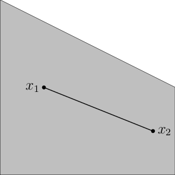
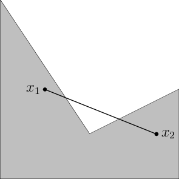

<!DOCTYPE html>
<html lang="en" >
<head>
  <script>(function(){var t=localStorage.getItem('notes-theme');if(t)document.documentElement.setAttribute('data-theme',t);})()</script>
  <meta charset="UTF-8">
  <meta name="viewport" content="width=device-width, initial-scale=1.0">
  <title>Optimization</title>

  <link rel="preconnect" href="https://fonts.googleapis.com">
  <link rel="preconnect" href="https://fonts.gstatic.com" crossorigin>
  <link href="https://fonts.googleapis.com/css2?family=EB+Garamond:ital,wght@0,400;0,500;0,600;1,400;1,500&family=Inter:wght@400;500;600&family=Playfair+Display:ital,wght@0,500;0,600;0,700;1,500&display=swap" rel="stylesheet">

  <script>
  window.MathJax = {
    tex: {
      macros: {
        bb:     ['\\mathbb{#1}', 1],
        ser:    ['\\mathsf{#1}', 1],
        bd:     ['\\mathbf{#1}', 1],
        bld:    ['\\boldsymbol{#1}', 1],
        src:    ['\\mathscr{#1}', 1],
        cl:     ['\\mathcal{#1}', 1],
        iprod:  ['\\langle #1,\\, #2 \\rangle', 2],
        TT:     '\\mathsf{T}',
        jj:     '\\mathrm{j}',
        dx:     '\\mathrm{d}',
        zerovec:'\\boldsymbol{0}',
        sinc:   '\\operatorname{sinc}',
        crd:    '\\operatorname{card}',
        dimn:   '\\operatorname{dim}',
        nul:    '\\operatorname{nul}',
        prox:   '\\operatorname{prox}',
        Fix:    '\\operatorname{Fix}',
        diag:   '\\operatorname{diag}',
        dom:    '\\operatorname{dom}',
        grad:   '\\nabla',
        Disp:   '\\displaystyle',
        norm:   ['\\left\\lVert #1 \\right\\rVert', 1],
        abs:    ['\\left\\lvert #1 \\right\\rvert', 1]
      },
      inlineMath: [['\\(', '\\)']],
      displayMath: [['\\[', '\\]']],
      tags: 'ams'
    },
    options: { skipHtmlTags: ['script','noscript','style','textarea','pre'] }
  };
  </script>
  <script src="https://cdn.jsdelivr.net/npm/mathjax@3/es5/tex-chtml.js" id="MathJax-script" async></script>

  <style>
*, *::before, *::after { box-sizing: border-box; margin: 0; padding: 0; }

html { scroll-behavior: smooth; -webkit-text-size-adjust: 100%; }

/* ── Tokens ── */
:root {
  --bg:         #f7f4ec;
  --bg2:        #fffdf8;
  --text:       #161310;
  --text2:      #4a443b;
  --muted:      #8a8175;
  --border:     #e4ddcf;
  --accent:     #9a7b4f;
  --link:       #1a1f71;
  --def-bg:     #fefce8;
  --def-border: #ca8a04;
  --thm-bg:     #ecfeff;
  --thm-border: #0891b2;
  --prop-bg:    #fdf6f0;
  --prop-border:#92400e;
  --lem-bg:     #fff7ed;
  --lem-border: #ea580c;
  --cor-bg:     #f5f3ff;
  --cor-border: #7c3aed;
  --rem-border: #16a34a;
  --ex-bg:      #f9fafb;
  --ex-border:  #6b7280;
  --proof-color:#4a443b;
}
html[data-theme="dark"] {
  --bg:         #14120f;
  --bg2:        #1c1916;
  --text:       #ece7dd;
  --text2:      #b3aa9c;
  --muted:      #837b6e;
  --border:     #2c2823;
  --accent:     #c9a875;
  --link:       #8b90ff;
  --def-bg:     #1f1c0a;
  --def-border: #a16207;
  --thm-bg:     #0a1f22;
  --thm-border: #0e7490;
  --prop-bg:    #1a110a;
  --prop-border:#78350f;
  --lem-bg:     #1a0e04;
  --lem-border: #c2410c;
  --cor-bg:     #130e1f;
  --cor-border: #6d28d9;
  --rem-border: #15803d;
  --ex-bg:      #1a1916;
  --ex-border:  #4b5563;
  --proof-color:#b3aa9c;
}
html[data-theme="paper"] {
  --bg:         #f0e6c8;
  --bg2:        #e8dab8;
  --text:       #2c1a0e;
  --text2:      #5c3d25;
  --muted:      #9c7a58;
  --border:     #d4b896;
  --accent:     #9b6820;
  --link:       #7b2f0c;
  --def-bg:     #faf3da;
  --def-border: #b45309;
  --thm-bg:     #d8eef0;
  --thm-border: #0e7490;
  --prop-bg:    #f5e8da;
  --prop-border:#78350f;
  --lem-bg:     #fde8d0;
  --lem-border: #c2410c;
  --cor-bg:     #ede8f8;
  --cor-border: #6d28d9;
  --rem-border: #15803d;
  --ex-bg:      #eee4cc;
  --ex-border:  #6b7280;
  --proof-color:#5c3d25;
}

body {
  font-family: "Inter", -apple-system, BlinkMacSystemFont, "Segoe UI", sans-serif;
  background: var(--bg);
  color: var(--text);
  font-size: 15px;
  line-height: 1.7;
  -webkit-font-smoothing: antialiased;
  display: flex;
  flex-direction: column;
  min-height: 100vh;
}

a { color: var(--link); text-decoration: none; }
a:hover { text-decoration: underline; }

/* ── Top bar ── */
.topbar {
  position: sticky;
  top: 0;
  z-index: 100;
  background: var(--bg);
  border-bottom: 1px solid var(--border);
  display: flex;
  align-items: center;
  justify-content: space-between;
  padding: 0 32px;
  height: 52px;
  font-family: "Inter", sans-serif;
  font-size: 12px;
  font-weight: 600;
  letter-spacing: .12em;
  text-transform: uppercase;
  color: var(--muted);
}
.topbar-left { display: flex; align-items: center; gap: 20px; }
.topbar-back {
  display: flex; align-items: center; gap: 6px;
  color: var(--accent); transition: color 0.2s;
}
.topbar-back:hover { color: var(--text); text-decoration: none; }
.topbar-back svg { width: 14px; height: 14px; }
.topbar-title { color: var(--text); letter-spacing: .06em; }
.topbar-right { display: flex; align-items: center; gap: 12px; }

/* ── Theme toggle ── */
.theme-toggle {
  display: inline-flex; align-items: center;
  background: transparent; border: 1px solid var(--border);
  border-radius: 30px; padding: 3px 4px; gap: 2px;
}
.tt-btn {
  width: 24px; height: 24px; border-radius: 50%; border: none;
  background: transparent; display: flex; align-items: center;
  justify-content: center; color: var(--muted); cursor: pointer;
  padding: 0; transition: background 0.2s, color 0.2s;
}
.tt-btn svg { width: 12px; height: 12px; display: block; }
.tt-btn.active { background: var(--bg2); color: var(--accent); }

/* ── Layout ── */
.page-wrap {
  display: flex;
  flex: 1;
  max-width: 1200px;
  margin: 0 auto;
  width: 100%;
  padding: 0 24px;
  gap: 48px;
}

/* ── Sidebar TOC ── */
.sidebar {
  width: 220px;
  flex-shrink: 0;
  padding: 36px 0 60px;
  position: sticky;
  top: 52px;
  height: calc(100vh - 52px);
  overflow-y: auto;
}
.sidebar-label {
  font-family: "Inter", sans-serif;
  font-size: 10px;
  font-weight: 600;
  letter-spacing: .2em;
  text-transform: uppercase;
  color: var(--muted);
  margin-bottom: 12px;
}
.sidebar nav ul { list-style: none; }
.sidebar nav ul li { margin: 0; }
.sidebar nav ul li a {
  display: block;
  font-family: "Inter", sans-serif;
  font-size: 12.5px;
  color: var(--muted);
  padding: 4px 0 4px 10px;
  border-left: 2px solid transparent;
  line-height: 1.4;
  transition: color 0.2s, border-color 0.2s;
}
.sidebar nav ul li a:hover,
.sidebar nav ul li a.active {
  color: var(--text);
  border-left-color: var(--accent);
  text-decoration: none;
}
.sidebar nav ul ul { padding-left: 12px; }
.sidebar nav ul ul li a { font-size: 11.5px; }

/* ── Main content ── */
main {
  flex: 1;
  min-width: 0;
  padding: 40px 0 80px;
  max-width: 72ch;
}

/* Typography */
main h1, main h2, main h3, main h4 {
  font-family: "Playfair Display", "EB Garamond", Georgia, serif;
  color: var(--text);
  line-height: 1.2;
}
main h1 { font-size: 2rem; margin-bottom: 1.2rem; font-weight: 600; }
main h2 {
  font-size: 1.45rem; margin-top: 2.8rem; margin-bottom: 1rem;
  font-weight: 600; padding-bottom: .4rem;
  border-bottom: 1px solid var(--border);
}
main h3 { font-size: 1.15rem; margin-top: 2rem; margin-bottom: .8rem; font-weight: 600; }
main h4 { font-size: 1rem; margin-top: 1.6rem; margin-bottom: .5rem; font-weight: 600; }
main p { margin-bottom: .9em; }
main ul, main ol { padding-left: 1.6em; margin-bottom: .9em; }
main li { margin-bottom: .3em; }
main strong { font-weight: 600; color: var(--text); }
main em { font-style: italic; }
main table {
  border-collapse: collapse; width: 100%;
  margin: 1.2rem 0; font-size: 0.92rem;
}
main th, main td {
  border: 1px solid var(--border); padding: 6px 12px; text-align: left;
}
main th { background: var(--bg2); font-family: "Inter", sans-serif; font-size: .85rem; }
main code {
  font-family: "Courier New", monospace; font-size: .85em;
  background: var(--bg2); padding: 1px 5px; border-radius: 3px;
}

/* ── Theorem environments ── */
.definition, .theorem, .proposition, .lemma, .corollary,
.remark, .remarks, .example, .examples, .exercise, .proof, .cthm {
  margin: 1.4rem 0;
  padding: 14px 18px;
  border-radius: 3px;
  position: relative;
}

.definition {
  background: var(--def-bg);
  border: 1px solid color-mix(in srgb, var(--def-border) 30%, transparent);
  border-left: 3px solid var(--def-border);
}
.theorem {
  background: var(--thm-bg);
  border-left: 3px solid var(--thm-border);
}
.proposition {
  background: var(--prop-bg);
  border-left: 3px solid var(--prop-border);
}
.lemma {
  background: var(--lem-bg);
  border-left: 3px solid var(--lem-border);
}
.corollary {
  background: var(--cor-bg);
  border-left: 3px solid var(--cor-border);
}
.remark, .remarks {
  border-left: 3px solid var(--rem-border);
  padding-left: 16px;
}
.example, .examples {
  background: var(--ex-bg);
  border-left: 3px solid var(--ex-border);
}
.cthm {
  background: var(--ex-bg);
  border-left: 3px solid var(--muted);
}
.exercise {
  background: var(--bg2);
  border: 1px solid var(--border);
  border-left: 3px solid var(--accent);
}
.proof {
  color: var(--proof-color);
  font-style: italic;
  border-top: 1px solid var(--border);
  padding-top: 12px;
  margin-top: 1rem;
}

/* Environment label */
.definition > p:first-child::before    { content: 'Definition. '; font-family: "Inter", sans-serif; font-size: .8rem; font-weight: 700; font-style: normal; color: var(--def-border); text-transform: uppercase; letter-spacing: .06em; }
.theorem > p:first-child::before       { content: 'Theorem. '; font-family: "Inter", sans-serif; font-size: .8rem; font-weight: 700; color: var(--thm-border); text-transform: uppercase; letter-spacing: .06em; }
.proposition > p:first-child::before   { content: 'Proposition. '; font-family: "Inter", sans-serif; font-size: .8rem; font-weight: 700; color: var(--prop-border); text-transform: uppercase; letter-spacing: .06em; }
.lemma > p:first-child::before         { content: 'Lemma. '; font-family: "Inter", sans-serif; font-size: .8rem; font-weight: 700; color: var(--lem-border); text-transform: uppercase; letter-spacing: .06em; }
.corollary > p:first-child::before     { content: 'Corollary. '; font-family: "Inter", sans-serif; font-size: .8rem; font-weight: 700; color: var(--cor-border); text-transform: uppercase; letter-spacing: .06em; }
.remark > p:first-child::before,
.remarks > p:first-child::before       { content: 'Remark. '; font-family: "Inter", sans-serif; font-size: .8rem; font-weight: 700; color: var(--rem-border); text-transform: uppercase; letter-spacing: .06em; }
.example > p:first-child::before,
.examples > p:first-child::before      { content: 'Example. '; font-family: "Inter", sans-serif; font-size: .8rem; font-weight: 700; color: var(--ex-border); text-transform: uppercase; letter-spacing: .06em; }
.exercise > p:first-child::before      { content: 'Exercise. '; font-family: "Inter", sans-serif; font-size: .8rem; font-weight: 700; color: var(--accent); text-transform: uppercase; letter-spacing: .06em; }
.proof > p:first-child::before         { content: 'Proof. '; font-style: normal; font-family: "Inter", sans-serif; font-size: .8rem; font-weight: 700; text-transform: uppercase; letter-spacing: .06em; color: var(--muted); }

/* Math display */
.math.display { overflow-x: auto; padding: 6px 0; }

/* ── Mobile ── */
@media (max-width: 860px) {
  .sidebar { display: none; }
  .page-wrap { padding: 0 18px; gap: 0; }
  main { padding: 28px 0 60px; }
  .topbar { padding: 0 18px; }
}
  </style>
</head>
<body>

  <!-- ── Top bar ── -->
  <header class="topbar">
    <div class="topbar-left">
      <a class="topbar-back" href="index.html">
        <svg viewBox="0 0 24 24" fill="none" stroke="currentColor" stroke-width="2.5" stroke-linecap="round"><polyline points="15 18 9 12 15 6"/></svg>
        Notes
      </a>
      <span class="topbar-title">Optimization</span>
    </div>
    <div class="topbar-right">
      <div class="theme-toggle" id="theme-toggle" aria-label="Switch theme">
        <button class="tt-btn" data-t="light" title="Light mode"><svg viewBox="0 0 24 24" fill="none" stroke="currentColor" stroke-width="2" stroke-linecap="round"><circle cx="12" cy="12" r="4"/><line x1="12" y1="2" x2="12" y2="5"/><line x1="12" y1="19" x2="12" y2="22"/><line x1="2" y1="12" x2="5" y2="12"/><line x1="19" y1="12" x2="22" y2="12"/><line x1="4.93" y1="4.93" x2="6.64" y2="6.64"/><line x1="17.36" y1="17.36" x2="19.07" y2="19.07"/><line x1="19.07" y1="4.93" x2="17.36" y2="6.64"/><line x1="6.64" y1="17.36" x2="4.93" y2="19.07"/></svg></button>
        <button class="tt-btn" data-t="dark" title="Dark mode"><svg viewBox="0 0 24 24" fill="currentColor"><path d="M21 12.79A9 9 0 1 1 11.21 3 7 7 0 0 0 21 12.79z"/></svg></button>
        <button class="tt-btn" data-t="paper" title="Parchment mode"><svg viewBox="0 0 24 24" fill="none" stroke="currentColor" stroke-width="2" stroke-linecap="round" stroke-linejoin="round"><path d="M4 19.5A2.5 2.5 0 0 1 6.5 17H20"/><path d="M6.5 2H20v20H6.5A2.5 2.5 0 0 1 4 19.5v-15A2.5 2.5 0 0 1 6.5 2z"/></svg></button>
      </div>
    </div>
  </header>

  <div class="page-wrap">
    <!-- ── Sidebar ── -->
        <aside class="sidebar">
      <div class="sidebar-label">Contents</div>
      <ul>
      <li><a href="#convex-sets-and-convex-functions"
      id="toc-convex-sets-and-convex-functions">Convex Sets and Convex
      Functions</a>
      <ul>
      <li><a href="#differentiable-functions"
      id="toc-differentiable-functions">Differentiable
      Functions</a></li>
      <li><a href="#optima-of-convex-functions"
      id="toc-optima-of-convex-functions">Optima of Convex
      Functions</a></li>
      <li><a href="#first-order-conditions"
      id="toc-first-order-conditions">First-order Conditions</a></li>
      </ul></li>
      <li><a href="#notions-of-nonexpansiveness"
      id="toc-notions-of-nonexpansiveness">Notions of
      Nonexpansiveness</a></li>
      <li><a href="#the-gradient-descent-algorithm"
      id="toc-the-gradient-descent-algorithm">The Gradient-Descent
      Algorithm</a>
      <ul>
      <li><a href="#convergence-analysis-of-gradient-descent"
      id="toc-convergence-analysis-of-gradient-descent">Convergence
      Analysis of Gradient Descent</a></li>
      <li><a
      href="#convergence-analysis-of-gradient-descent-using-contraction-mapping-theory"
      id="toc-convergence-analysis-of-gradient-descent-using-contraction-mapping-theory">Convergence
      Analysis of Gradient Descent Using Contraction Mapping
      Theory</a></li>
      </ul></li>
      <li><a
      href="#constrained-optimisation-and-projected-gradient-descent"
      id="toc-constrained-optimisation-and-projected-gradient-descent">Constrained
      Optimisation and Projected Gradient Descent</a>
      <ul>
      <li><a href="#convergence-analysis-of-projected-gradient-descent"
      id="toc-convergence-analysis-of-projected-gradient-descent">Convergence
      Analysis of Projected Gradient Descent</a></li>
      <li><a href="#extended-valued-functions"
      id="toc-extended-valued-functions">Extended-Valued
      Functions</a></li>
      <li><a href="#lower-semicontinuity"
      id="toc-lower-semicontinuity">Lower Semicontinuity</a></li>
      </ul></li>
      <li><a href="#subgradient-methods"
      id="toc-subgradient-methods">Subgradient Methods</a>
      <ul>
      <li><a href="#directional-derivatives-and-support-functions"
      id="toc-directional-derivatives-and-support-functions">Directional
      Derivatives and Support Functions</a></li>
      </ul></li>
      <li><a href="#proximal-methods" id="toc-proximal-methods">Proximal
      Methods</a>
      <ul>
      <li><a href="#projected-subgradient-descent"
      id="toc-projected-subgradient-descent">Projected Subgradient
      Descent</a></li>
      <li><a href="#proximal-gradient-method"
      id="toc-proximal-gradient-method">Proximal Gradient
      Method</a></li>
      </ul></li>
      <li><a href="#fenchel-conjugate"
      id="toc-fenchel-conjugate">Fenchel Conjugate</a>
      <ul>
      <li><a href="#properness-of-fenchel-conjugates"
      id="toc-properness-of-fenchel-conjugates">Properness of Fenchel
      Conjugates</a></li>
      <li><a href="#biconjugate-theorem"
      id="toc-biconjugate-theorem">Biconjugate Theorem</a></li>
      </ul></li>
      </ul>
    </aside>
    
    <!-- ── Main ── -->
    <main>
      <h1 id="convex-sets-and-convex-functions">Convex Sets and Convex
      Functions</h1>
      <div class="definition">
      <p>Let <span class="math inline">\(X\)</span> be a linear space
      (vector space) equipped with an inner product denoted as <span
      class="math inline">\(\langle\cdot,\cdot\rangle\)</span>.</p>
      <ol>
      <li><p><span class="math inline">\(C\subseteq X\)</span> is an
      affine set if <span class="math display">\[(\forall x_1,x_2\in C,
      \forall\theta\in\bb R), \quad \theta x_1 + (1-\theta)x_2 \in
      C.\]</span></p></li>
      <li><p><span class="math inline">\(C\subseteq X\)</span> is a
      convex set if <span class="math display">\[(\forall x_1,x_2\in C,
      \forall\theta\in [0,1]), \quad \theta x_1 + (1-\theta)x_2 \in
      C.\]</span></p></li>
      </ol>
      </div>
      <p>The topology of convex sets may be open, for instance <span
      class="math inline">\(]0,1[\)</span> or closed, for instance <span
      class="math inline">\([0,1]\)</span>.</p>
      <div class="marginfigure">
      <p></p>
      </div>
      <div class="marginfigure">
      <p></p>
      </div>
      <div class="definition">
      <p>Let <span class="math inline">\(C\)</span> be a convex set.
      <span class="math inline">\(f:C\rightarrow\bb R\)</span> is a
      convex function if <span class="math display">\[(\forall
      x_1,x_2\in X, \forall\theta\in [0,1]), \;\; f(\theta x_1 +
      (1-\theta)x_2) \leq \theta f(x_1) + (1-\theta)
      f(x_2).\]</span></p>
      </div>
      <div class="definition">
      <p>Let <span class="math inline">\(f:C\rightarrow\bb R\)</span>.
      We define an optimisation (minimisation) programme as <span
      class="math display">\[\tag{$P$}\label{eq:canonical_problem}
              \underset{x\in\Omega}{\text{minimise }} f(x).\]</span></p>
      <ul>
      <li><p><span class="math inline">\(f\)</span> is called the
      objective function,</p></li>
      <li><p><span class="math inline">\(\Omega\)</span> is called the
      feasible set.</p></li>
      </ul>
      </div>
      <h4 class="unnumbered" id="remark">Remark</h4>
      <p>Well-posed and solvable optimisation programmes<br />
      Consider the canonical optimisation programme <a
      href="#eq:canonical_problem" data-reference-type="eqref"
      data-reference="eq:canonical_problem">[eq:canonical_problem]</a>.</p>
      <ol>
      <li><p><a href="#eq:canonical_problem" data-reference-type="eqref"
      data-reference="eq:canonical_problem">[eq:canonical_problem]</a>
      is <u>well-posed</u> if there exists <span
      class="math inline">\(\displaystyle f^* = \inf_{x\in\Omega}
      f(x)\)</span>. Then, <span class="math inline">\(f^*\)</span> is
      called the <u>minimum value</u> of <span
      class="math inline">\(f\)</span>.</p></li>
      <li><p><a href="#eq:canonical_problem" data-reference-type="eqref"
      data-reference="eq:canonical_problem">[eq:canonical_problem]</a>
      is <u>solvable</u> if there exists <span
      class="math inline">\(\displaystyle x^* = \arg\min_{x\in\Omega}
      f(x)\)</span>, Then, <span class="math inline">\(x^*\)</span> is
      called the (global) <u>minimiser</u> of <span
      class="math inline">\(f\)</span>.</p></li>
      </ol>
      <div class="definition">
      <p>Let <span class="math inline">\(f:X\rightarrow\bb R\)</span>.
      <span class="math inline">\(x^*\)</span> is called a local
      minimiser of <span class="math inline">\(f\)</span> if <span
      class="math inline">\(\exists\epsilon &gt; 0\)</span> such that
      <span class="math display">\[\forall x\in \cl B(x^*,\epsilon),\;
      f(x) \geq f(x^*),\]</span> where <span class="math inline">\(\cl
      B(x^*,\epsilon) = \{y:\norm{y-x^*}&lt;\epsilon\}\)</span> denotes
      the norm ball with centre <span class="math inline">\(x^*\)</span>
      and radius <span class="math inline">\(\epsilon\)</span>.</p>
      </div>
      <h2 id="differentiable-functions">Differentiable Functions</h2>
      <div class="definition">
      <p><span id="def:frechet_differentiable_functions"
      data-label="def:frechet_differentiable_functions"></span> Let
      <span class="math inline">\(f:X\rightarrow \bb R\)</span>, and
      <span class="math inline">\(x\in X\)</span>. We say <span
      class="math inline">\(f\)</span> is <u>Fréchet differentiable</u>
      at <span class="math inline">\(x\in X\)</span> if <span
      class="math inline">\(\exists ! g_x\in X\)</span> such that <span
      class="math display">\[\forall h\in X,\; f(x+h) = f(x) + \langle
      g_x, h\rangle + o(\norm{h}).\]</span> We write <span
      class="math inline">\(g_x = \nabla f(x)\)</span>.</p>
      </div>
      <div class="exercise">
      <p>Suppose there exists <span class="math inline">\(g_x, \bar{g}_x
      \in X\)</span> such that <span
      class="math display">\[\lim_{h\rightarrow 0}
      \frac{f(x+h)-f(x)-\langle g_x,h\rangle}{\norm{h}},\text{ and
      }\lim_{h\rightarrow 0} \frac{f(x+h)-f(x)-\langle
      \bar{g}_x,h\rangle}{\norm{h}}.\]</span> Taking the difference, we
      have: <span class="math display">\[% \forall h\in X,\; %
              \lim_{h\rightarrow 0}\frac{\langle g_x-\bar{g}_x,
      h\rangle}{\norm{h}} = 0,\]</span> i.e., a linear functional is
      identically zero, which implies <span class="math inline">\(g_x =
      \bar{g}_x\)</span>.0◻</p>
      </div>
      <h2 id="optima-of-convex-functions">Optima of Convex
      Functions</h2>
      <div class="theorem">
      <p>Let <span class="math inline">\(x^*\in\Omega\)</span> be a
      local minimiser of a convex function <span
      class="math inline">\(f:\Omega\rightarrow\bb R\)</span>. Then,
      <span class="math inline">\(x^*\)</span> is the global minimiser
      of <span class="math inline">\(f\)</span>.</p>
      </div>
      <h2 id="first-order-conditions">First-order Conditions</h2>
      <div class="theorem">
      <p><span id="thm:first_order_condition"
      data-label="thm:first_order_condition"></span> Let <span
      class="math inline">\(f\in C^1(\bb R^n)\)</span>. Then, <span
      class="math inline">\(f\)</span> is convex iff <span
      class="math display">\[(\forall x,y\in\bb R^n), \quad f(y) \geq
      f(x) + \langle \nabla f(x), y-x\rangle\]</span></p>
      </div>
      <h4 class="unnumbered" id="geometric-interpretation">Geometric
      interpretation</h4>
      <p>For convex functions <span class="math inline">\(f\in C^1(\bb
      R)\)</span>, the tangent at a point <span
      class="math inline">\(x_0\)</span>: <span
      class="math display">\[y(x) = f&#39;(x_0)(x-x_0) + f(x_0) \leq
      f(x),\]</span> is a global underestimator to <span
      class="math inline">\(f\)</span>.</p>
      <div class="corollary">
      <p><span id="cor:fermats-principle"
      data-label="cor:fermats-principle"></span> Let <span
      class="math inline">\(f\in C^1(\bb R^n)\)</span> be convex. Then,
      <span class="math display">\[\nabla f(x^*) = 0 \;
      \Longleftrightarrow \; x^* \in\arg\min_{x\in\bb
      R^n}f(x).\]</span></p>
      </div>
      <div class="corollary">
      <p><span id="cor:monotoncity-convex-functions"
      data-label="cor:monotoncity-convex-functions"></span> Let <span
      class="math inline">\(f\in C^1(\bb R^n)\)</span>. Then, <span
      class="math inline">\(f\)</span> is convex if and only if the
      mapping <span class="math inline">\(x\mapsto \nabla f(x)\)</span>
      is monotone, i.e., <span class="math display">\[(\forall x,y\in\bb
      R^n), \quad \langle \nabla f(x)-\nabla f(y), x-y\rangle \geq
      0.\]</span></p>
      </div>
      <div class="definition">
      <p>A function <span class="math inline">\(f\in C^1(X)\)</span> is
      <span class="math inline">\(\beta\)</span>-smooth, if <span
      class="math inline">\(\nabla f\)</span> is Lipschitz, i.e., <span
      class="math inline">\(\exists \beta &gt;0\)</span> such that,
      <span class="math display">\[\forall x,y\in X, \; \Vert \nabla
      f(x)-\nabla f(y)\Vert \leq \beta \Vert x-y \Vert.\]</span></p>
      </div>
      <div class="lemma">
      <p><span id="lem:smooth-majoriser"
      data-label="lem:smooth-majoriser"></span> Let <span
      class="math inline">\(f\)</span> be <span
      class="math inline">\(\beta\)</span>-smooth. Then, <span
      class="math inline">\(\forall x,y\in\bb R^n\)</span>, <span
      class="math display">\[f(y) \leq f(x) + \langle \nabla f(x),
      y-x\rangle + \frac{\beta}{2} \Vert y-x\Vert^2.\]</span> In
      particular, if <span class="math inline">\(f\)</span> is convex,
      then, <span class="math inline">\(\nabla f\)</span> is
      <u>strongly-monotonic</u> with <span
      class="math display">\[(\forall x,y\in\bb R^n), \quad \langle
      \nabla f(x)-\nabla f(y), x-y\rangle \geq \frac{1}{\beta} \Vert
      \nabla f(x) - \nabla f(y)\Vert^2.\]</span></p>
      </div>
      <div class="definition">
      <p>A function <span class="math inline">\(f:\bb R^n\rightarrow\bb
      R\)</span> is called <span
      class="math inline">\(\sigma\)</span>-strongly convex, <span
      class="math inline">\(\sigma &gt; 0\)</span>, if the function
      <span
      class="math inline">\(f-\frac{\sigma}{2}\norm{\cdot}^2\)</span> is
      convex.</p>
      </div>
      <div class="exercise">
      <p>Let <span class="math inline">\(f\)</span> be <span
      class="math inline">\(\sigma\)</span>-strongly convex and <span
      class="math inline">\(\beta\)</span>-smooth. Show that <span
      class="math inline">\(\beta \geq \sigma\)</span>.<br />
      (Checkpoint) Suppose <span class="math inline">\(f\in C^2(\bb
      R^n)\)</span>. Then, it is easy to verify that,</p>
      <ol>
      <li><p><span class="math inline">\(\beta\)</span>-smoothness <span
      class="math inline">\(\implies\nabla^2 f(x)\leq\beta I,\;\forall
      x\in\bb R^n\)</span>,</p></li>
      <li><p><span class="math inline">\(\sigma\)</span>-strongly convex
      <span class="math inline">\(\implies \nabla^2 g(x) = \nabla^2 f(x)
      - \sigma I \geq 0, \;\forall x\in\bb R^n\)</span>,</p></li>
      </ol>
      <p>using the second-order test for convexity. Therefore, we have
      <span class="math display">\[\sigma I\leq \nabla^2 f(x)\leq\beta
      I, \;\forall x\in\bb R^n,\]</span> and in particular, <span
      class="math inline">\(\sigma \leq \beta\)</span>. This gives a
      tractable method to compute the bounds <span
      class="math inline">\(\sigma,\beta\)</span> using the eigenvalues
      of the Hessian matrix.</p>
      </div>
      <p>Can this result be shown in general? While smooth functions
      have a quadratic majoriser, strongly convex functions have a
      quadratic minoriser.</p>
      <div class="lemma">
      <p>Let <span class="math inline">\(f\in C^1(\bb R)\)</span> and
      <span class="math inline">\(\sigma\)</span>-strongly-convex. Then,
      <span class="math inline">\(\forall x,y \in\bb R^n\)</span>, <span
      class="math display">\[f(y) \geq f(x) + \langle \nabla f(x),
      y-x\rangle + \frac{\sigma}{2} \Vert y-x\Vert^2.\]</span> Further,
      if <span class="math inline">\(f\)</span> is <span
      class="math inline">\(\beta\)</span>-smooth, <span
      class="math display">\[\langle \nabla f(x)-\nabla f(y), x-y\rangle
      \geq \frac{1}{\sigma+\beta} \Vert \nabla f(x) - \nabla f(y)\Vert^2
      + \frac{\beta\sigma}{\sigma+\beta}\Vert x-y\Vert^2.\]</span></p>
      </div>
      <div class="definition">
      <p>A function <span class="math inline">\(f:\bb R^n\rightarrow\bb
      R\)</span> is called <span
      class="math inline">\(\sigma\)</span>-strongly convex, <span
      class="math inline">\(\sigma &gt; 0\)</span>, if the function
      <span
      class="math inline">\(f-\frac{\sigma}{2}\norm{\cdot}^2\)</span> is
      convex.</p>
      </div>
      <div class="exercise">
      <p>Let <span class="math inline">\(f\)</span> be <span
      class="math inline">\(\sigma\)</span>-strongly convex and <span
      class="math inline">\(\beta\)</span>-smooth. Show that <span
      class="math inline">\(\beta \geq \sigma\)</span>.<br />
      (Checkpoint) Suppose <span class="math inline">\(f\in C^2(\bb
      R^n)\)</span>. Then, it is easy to verify that,</p>
      <ol>
      <li><p><span class="math inline">\(\beta\)</span>-smoothness <span
      class="math inline">\(\implies\nabla^2 f(x)\leq\beta I,\;\forall
      x\in\bb R^n\)</span>,</p></li>
      <li><p><span class="math inline">\(\sigma\)</span>-strongly convex
      <span class="math inline">\(\implies \nabla^2 g(x) = \nabla^2 f(x)
      - \sigma I \geq 0, \;\forall x\in\bb R^n\)</span>,</p></li>
      </ol>
      <p>using the second-order test for convexity. Therefore, we have
      <span class="math display">\[\sigma I\leq \nabla^2 f(x)\leq\beta
      I, \;\forall x\in\bb R^n,\]</span> and in particular, <span
      class="math inline">\(\sigma \leq \beta\)</span>. This gives a
      tractable method to compute the bounds <span
      class="math inline">\(\sigma,\beta\)</span> using the eigenvalues
      of the Hessian matrix.</p>
      </div>
      <p>Can this result be shown in general? While smooth functions
      have a quadratic majoriser, strongly convex functions have a
      quadratic minoriser.</p>
      <div class="lemma">
      <p>Let <span class="math inline">\(f\in C^1(\bb R)\)</span> and
      <span class="math inline">\(\sigma\)</span>-strongly-convex. Then,
      <span class="math inline">\(\forall x,y \in\bb R^n\)</span>, <span
      class="math display">\[f(y) \geq f(x) + \langle \nabla f(x),
      y-x\rangle + \frac{\sigma}{2} \Vert y-x\Vert^2.\]</span> Further,
      if <span class="math inline">\(f\)</span> is <span
      class="math inline">\(\beta\)</span>-smooth, <span
      class="math display">\[\langle \nabla f(x)-\nabla f(y), x-y\rangle
      \geq \frac{1}{\sigma+\beta} \Vert \nabla f(x) - \nabla f(y)\Vert^2
      + \frac{\beta\sigma}{\sigma+\beta}\Vert x-y\Vert^2.\]</span></p>
      </div>
      <div class="lemma">
      <p><span id="lem:polyak" data-label="lem:polyak"></span> Let <span
      class="math inline">\(f\)</span> be <span
      class="math inline">\(\sigma\)</span>-strongly convex and <span
      class="math inline">\(C^1(\bb R^n)\)</span>. Then, <span
      class="math inline">\(\forall x\in\bb R^n\)</span>, <span
      class="math display">\[f(x) - f^* \leq
      \frac{1}{2\sigma}\norm{\nabla f(x)}^2.\]</span></p>
      </div>
      <h4 class="unnumbered" id="remark-1">Remark</h4>
      <p>The sub-optimality gap is controlled by the gradient.<br />
      (Checkpoint) Note that the optimality gap is zero when the
      gradient is zero, verifying Fermat’s principle.</p>
      <h1 id="notions-of-nonexpansiveness">Notions of
      Nonexpansiveness</h1>
      <div class="definition">
      <p>Let <span class="math inline">\(T:X\rightarrow X\)</span>. We
      say <span class="math inline">\(T\)</span> is a contraction if
      <span class="math inline">\(\exists \kappa \in [0,1[\)</span> such
      that <span class="math display">\[(\forall x,y\in X),\quad
      \norm{Tx-Ty} \leq \kappa \norm{x-y}.\]</span> In other words, the
      operator norm <span class="math inline">\(\norm{T} =
      \sup_{\norm{x}=1} \norm{Tx} &lt; 1\)</span>.</p>
      </div>
      <div class="definition">
      <p>Let <span class="math inline">\(T:X\rightarrow X\)</span>. We
      say that <span class="math inline">\(x^*\in X\)</span> is a
      <u>fixed point</u> of <span class="math inline">\(T\)</span> is
      <span class="math inline">\(Tx^* = x^*\)</span>. Define <span
      class="math display">\[\begin{aligned}
          \Fix(T) = \{x\in X:Tx=x\}.
      \end{aligned}\]</span></p>
      </div>
      <div class="theorem">
      <p>Let <span class="math inline">\(T:X\rightarrow X\)</span> be a
      contraction with <span
      class="math inline">\(\kappa=\norm{T}&lt;1\)</span>. Then, <span
      class="math inline">\(T\)</span> has a unique fixed point <span
      class="math inline">\(x^*\in\Fix(T)\)</span> such that <span
      class="math inline">\(x^*=Tx^*\)</span>.</p>
      </div>
      <div class="corollary">
      <p>Let <span class="math inline">\(T:X\rightarrow X\)</span> be a
      contraction with <span
      class="math inline">\(\kappa=\norm{T}&lt;1\)</span>, and define
      <span class="math inline">\((x_k)_{k\in\bb N}\)</span> as <span
      class="math inline">\(x_{k+1}=Tx_k\)</span>. Then, <span
      class="math display">\[\begin{aligned}
              \norm{x_k-x^*}\leq\kappa^k\norm{x_0-x^*},
          
      \end{aligned}\]</span> where <span
      class="math inline">\(x^*\)</span> is a fixed point of <span
      class="math inline">\(T\)</span>. Further, <span
      class="math inline">\(\norm{x_k-x^*}\leq\frac{\kappa^k}{1-\kappa}\norm{x_1-x_0}\)</span>.</p>
      </div>
      <div class="definition">
      <p>Let <span class="math inline">\(T:X\rightarrow X\)</span>.</p>
      <ol>
      <li><p><span class="math inline">\(T\)</span> is
      <u>nonexpansive</u> if <span class="math inline">\(\forall x,y\in
      X,\)</span> <span class="math display">\[\norm{Tx-Ty} \leq
      \norm{x-y},\]</span></p></li>
      <li><p><span class="math inline">\(T\)</span> is <u>firmly
      nonexpansive</u> if <span class="math inline">\(\forall x,y\in
      X,\)</span> <span class="math display">\[\norm{Tx-Ty}^2 +
      \norm{(I-T)x-(I-T)y}^2 \leq \norm{x-y}^2.\]</span></p></li>
      </ol>
      </div>
      <div class="definition">
      <p>A sequence <span class="math inline">\((x_{k})\)</span> is said
      to be Fejer monotone with respect to <span
      class="math inline">\(\Theta\subseteq X\)</span> if <span
      class="math display">\[(\forall k\geq 1,\theta\in\Theta), \quad
      \norm{x_{k+1}-\theta} \leq \norm{x_{k}-\theta}.\]</span></p>
      </div>
      <p>A Fejer monotone sequence is necessarily bounded but need not
      be convergent.</p>
      <div class="exercise">
      <p>Show that</p>
      <ol>
      <li><p><span class="math inline">\(T\)</span> is firmly
      nonexpansive if and only if <span
      class="math inline">\(2T-I\)</span> is nonexpansive.<br />
      <span><strong>Remark:</strong></span> If <span
      class="math inline">\(T\)</span> is firmly nonexpansive, then
      <span class="math inline">\(T = \frac{1}{2}(I+G)\)</span> can be
      written as an averaged operator, where <span
      class="math inline">\(G = 2T-I\)</span>.</p></li>
      <li><p>If <span class="math inline">\(T\)</span> is a contraction,
      then <span class="math inline">\(T\)</span> is firmly
      nonexpansive.</p></li>
      </ol>
      </div>
      <div class="exercise">
      <p>Let <span class="math inline">\(T\)</span> be firmly
      nonexpansive. Show that,</p>
      <ol>
      <li><p><span class="math inline">\(T\)</span> is
      continuous.</p></li>
      <li><p>Let <span class="math inline">\(x^*\)</span> be a fixed
      point of <span class="math inline">\(T\)</span>, and <span
      class="math inline">\(x_{k+1}=T\{x_{k}\}, \; k&gt;0\)</span>.
      Then,</p>
      <ol>
      <li><p><span class="math inline">\(\norm{x_{k+1} - x^*} \leq
      \norm{x_{k} - x^*}\)</span>, i.e., <span
      class="math inline">\((x_{k})_{k\geq 0}\)</span> is <u>Fejer
      monotone</u> with respect to <span
      class="math inline">\(X^*\)</span>,</p></li>
      <li><p><span class="math inline">\(\displaystyle\sum_{k=0}^\infty
      \norm{x_{k+1}-x_{k}}^2 &lt; \infty\)</span>.</p></li>
      </ol></li>
      </ol>
      </div>
      <h1 id="the-gradient-descent-algorithm">The Gradient-Descent
      Algorithm</h1>
      <div class="proposition">
      <p>Let <span class="math inline">\(f\in C^1(\bb R^n)\)</span>.
      Then, <span class="math display">\[\forall x\in\bb R^n, \; \exists
      \delta &gt;0, \text{ such that } \forall t\in [0,\delta]:
      f(x-t\nabla f(x)) &lt; f(x),\]</span> i.e., <span
      class="math inline">\(-\nabla f(x)\)</span> is a descent direction
      at <span class="math inline">\(x\)</span>.</p>
      </div>
      <div class="proof">
      <p><em>Proof.</em> Let <span class="math inline">\(f\in C^1(\bb
      R^n)\)</span>. Using Taylor’s theorem, we have <span
      class="math display">\[\begin{aligned}
              f(x-t\nabla f(x)) &amp;= f(x) + \langle\nabla f(x),
      -t\nabla f(x)\rangle + o(\abs{t}\norm{\nabla f(x)}), \\
              &amp;= f(x) - t\norm{\nabla f(x)}^2 + o(t).
          
      \end{aligned}\]</span> It is possible to make <span
      class="math inline">\(t&gt;0\)</span> sufficiently small such that
      the second term is negative. More concretely, <span
      class="math inline">\(\exists \delta&gt;0\)</span> such that for
      <span class="math inline">\(t\in [0,\delta]\)</span>, <span
      class="math display">\[\displaystyle\frac{o(t)}{t} &lt;
      \norm{\nabla f(x)}^2.\]</span> Then, we have <span
      class="math inline">\(f(x-t\nabla f(x)) &lt; f(x)\)</span>. ◻</p>
      </div>
      <p>This is the basis for the <u><strong>gradient descent
      algorithm</strong></u>. The parameter <span
      class="math inline">\(t\)</span> is called the <u>step-size</u>,
      which is a small positive number, and may vary at every iteration
      as <span class="math inline">\(\delta=\delta(x)\)</span>.<br />
      </p>
      <div class="algorithm">
      <p><span class="math inline">\(x_{k+1}\)</span></p>
      </div>
      <div class="example">
      <p>Consider <span
      class="math inline">\(f(x)=\frac{1}{2}x^2\)</span> the gradient
      descent iterates <span class="math display">\[\begin{aligned}
          x_{k+1} &amp;= x_{k} - \alpha \nabla f(x_{k}), \\
          &amp;= (1-\alpha) x_{k}.
      \end{aligned}\]</span> For convergence, <span
      class="math inline">\(\alpha \in ]0,2[\)</span>, i.e., for
      convergence of gradient descent, the step-size must be
      sufficiently small.</p>
      </div>
      <p><span><em>Q: Can we ensure gradient descent is a descent method
      for a fixed step-size?<br />
      A: Yes, if the objective function <span
      class="math inline">\(f\)</span> is “smooth”.</em></span></p>
      <div class="proposition">
      <p><span id="prop:gradient_step"
      data-label="prop:gradient_step"></span> Let <span
      class="math inline">\(f\)</span> be <span
      class="math inline">\(\beta\)</span>-smooth. Then, <span
      class="math inline">\(\forall x\in\bb R^n, \; \forall 0 &lt; t
      &lt; \frac{1}{\beta}\)</span>, <span
      class="math display">\[f(x-t\nabla f(x)) \leq f(x) - \frac{t}{2}
      (2-\beta t) \Vert \nabla f(x) \Vert^2 &lt; f(x).\]</span></p>
      </div>
      <div class="proof">
      <p><em>Proof.</em> Using the quadratic majoriser Lemma <a
      href="#lem:smooth-majoriser" data-reference-type="ref"
      data-reference="lem:smooth-majoriser">[lem:smooth-majoriser]</a>,
      we have, <span class="math display">\[\begin{aligned}
              f(x-t\nabla f(x)) &amp;\leq f(x) + \langle\nabla f(x),
      x-t\nabla f(x)-x\rangle + \frac{\beta}{2}\norm{x-t\nabla
      f(x)-x}^2,\\
              = f(x) &amp;- t\norm{\nabla f(x)}^2 + \frac{\beta
      t^2}{2}\norm{\nabla f(x)}^2 = f(x) - \frac{t}{2}(2-\beta
      t)\norm{f(x)}^2.
          
      \end{aligned}\]</span> Suppose the step-size <span
      class="math inline">\(\displaystyle
      0&lt;t&lt;\frac{1}{\beta}\)</span>, we get <span
      class="math display">\[\begin{aligned}
              f(x-t\nabla f(x)) \leq f(x) - \frac{t}{2}(2-\beta
      t)\norm{\nabla f(x)}^2 &lt; f(x).
          
      \end{aligned}\]</span> ◻</p>
      </div>
      <div class="corollary">
      <p>Let <span class="math inline">\(f\)</span> be <span
      class="math inline">\(\beta\)</span>-smooth and bounded below.
      Consider the gradient descent iteration with any <span
      class="math inline">\(x_{0}\in\bb R^n\)</span>, <span
      class="math inline">\(x_{k+1} = x_{k} - \frac{1}{\beta} \nabla
      f(x_{k})\)</span>. Then, <span class="math display">\[\forall
      x_{0}\in\bb R^n : \lim_{k\rightarrow \infty} \nabla f(x_{k}) =
      0.\]</span> In particular, if <span
      class="math inline">\(x^*\)</span> is a limit point of <span
      class="math inline">\((x_{k})\)</span>, then <span
      class="math inline">\(x^*\)</span> is a stationary point, i.e.,
      <span class="math inline">\(\nabla f(x^*) = 0\)</span>.</p>
      </div>
      <div class="proof">
      <p><em>Proof.</em> We note that, since <span
      class="math inline">\(f\)</span> is bounded below, <span
      class="math inline">\(f^*&gt;-\infty\)</span> exists. Using the
      quadratic majoriser, we have <span
      class="math display">\[\begin{aligned}
              f(x_{k+1}) &amp;= f\left(x_{k} - \frac{1}{\beta}\nabla
      f(x_{k})\right)\leq f(x_{k}) - \frac{1}{2\beta}\norm{\nabla
      f(x_{k})}^2,
          
      \end{aligned}\]</span> By rearrangement, we have <span
      class="math inline">\(\norm{\nabla f(x_{k})}^2\leq
      2\beta\left(f(x_{k})-f(x_{k+1})\right)\)</span>. In particular,
      for some <span class="math inline">\(N\in\bb N\)</span>, we have
      <span class="math display">\[\begin{aligned}
              \sum_{k=0}^{N-1} \norm{\nabla f(x_{k})}^2 \leq
      \sum_{k=0}^{N-1}2\beta\left(f(x_{k})-f(x_{k+1})\right) &amp;\leq
      2\beta \left(f(x_{0})-f(x_{N})\right)\\
              &amp;\leq 2\beta \left(f(x_{0})-f^*\right).
          
      \end{aligned}\]</span> Since the partial sum is bounded above,
      using the limit test for convergent series, we have <span
      class="math inline">\(\displaystyle\lim_{k\rightarrow \infty}
      \nabla f(x_{k}) = 0\)</span>. ◻</p>
      </div>
      <h4 class="unnumbered" id="terminology">Terminology</h4>
      <ol>
      <li><p><span>Objective convergence:</span> <span
      class="math inline">\(f(x_{k}) \rightarrow f^*\)</span></p></li>
      <li><p><span>Iterate convergence:</span> <span
      class="math inline">\(x_{k} \rightarrow x^*\)</span></p></li>
      <li><p><span>Minimising sequence:</span> <span
      class="math inline">\((x_{k})_{k\geq 0}\)</span> is a minimising
      sequence if <span class="math inline">\(x_{k} \rightarrow
      x^*\)</span></p></li>
      </ol>
      <h4 class="unnumbered"
      id="iterate-convergence-is-stronger-than-objective-convergence">Iterate
      convergence is stronger than objective convergence</h4>
      <p>If <span class="math inline">\(f\)</span> is <span
      class="math inline">\(\beta\)</span>-smooth, then linear iterate
      convergence implies linear objective convergence, as <span
      class="math display">\[f(x_{k}) - f^* \leq \langle \nabla f(x^*),
      x_{k} - x^* \rangle + \frac{\beta}{2} \Vert x_{k} - x^* \Vert^2 =
      \frac{\beta}{2} \Vert x_{k} - x^* \Vert^2.\]</span></p>
      <h2 id="convergence-analysis-of-gradient-descent">Convergence
      Analysis of Gradient Descent</h2>
      <div class="theorem">
      <p>Let <span class="math inline">\(f\)</span> be <span
      class="math inline">\(\beta\)</span>-smooth and <span
      class="math inline">\(\sigma\)</span>-strongly convex. Fix <span
      class="math inline">\(x_{0}\in\bb R^n\)</span>, and let <span
      class="math inline">\(x_{k+1} = x_{k} - \frac{1}{\beta} \nabla
      f(x_{k}),\; k&gt;0\)</span>. Then, we have objective convergence
      with an exponential rate (also called linear convergence). More
      precisely, <span class="math display">\[f(x_{k}) - f^* \leq
      (f(x_{0}) - f^*) \left(
      1-\frac{\sigma}{\beta}\right)^k.\]</span></p>
      </div>
      <div class="proof">
      <p><em>Proof.</em> Using Proposition <a href="#prop:gradient_step"
      data-reference-type="ref"
      data-reference="prop:gradient_step">[prop:gradient_step]</a>, we
      have <span class="math inline">\(f(x_{k+1}) \leq f(x_{k}) -
      \frac{1}{2\beta}\norm{\nabla f(x)}^2\)</span>. Then, using
      Lemma <a href="#lem:polyak" data-reference-type="ref"
      data-reference="lem:polyak">[lem:polyak]</a>, we have: <span
      class="math display">\[\begin{aligned}
              f(x_{k+1}) - f^* &amp;\leq f(x_{k}) - f^* -
      \frac{1}{2\beta}\norm{\nabla f(x)}^2, \\
              &amp;\leq f(x_{k}) - f^* - \frac{1}{2\beta}\cdot 2\sigma
      (f(x_{k}) - f^*) = \left(1-\frac{\sigma}{\beta}\right)(f(x_{k}) -
      f^*),\\
              &amp;\leq \cdots,\\
              &amp;\leq
      \left(1-\frac{\sigma}{\beta}\right)^{k+1}(f(x_{0}) - f^*).
          
      \end{aligned}\]</span> ◻</p>
      </div>
      <div class="theorem">
      <p>Let <span class="math inline">\(f\)</span> be <span
      class="math inline">\(\beta\)</span>-smooth and <span
      class="math inline">\(\sigma\)</span>-strongly convex. Fix <span
      class="math inline">\(x_{0}\in\bb R^n\)</span>, and let <span
      class="math inline">\(x_{k+1} = x_{k} - \frac{1}{\beta} \nabla
      f(x_{k})\; k&gt;0\)</span>. Then, we have iterate convergence with
      an exponential rate. More precisely, <span
      class="math display">\[\norm{x_{k} - x^*}^2 \leq
      \left(\frac{\beta-\sigma}{\beta+\sigma}\right)^k \norm{x_{0} -
      x^*}^2.\]</span></p>
      </div>
      <div class="proof">
      <p><em>Proof.</em> ◻</p>
      </div>
      <div class="theorem">
      <p>Let <span class="math inline">\(f\)</span> be convex and <span
      class="math inline">\(\beta\)</span>-smooth. Fix <span
      class="math inline">\(x_{0}\in\bb R^n\)</span>, and let <span
      class="math inline">\(x_{k+1} = x_{k} - \frac{1}{\beta} \nabla
      f(x_{k})\)</span>. Then, <span class="math display">\[f(x_{k})
      \leq f^* + o\left(\frac{1}{k}\right) \;\text{and }\;
      \norm{x_{k}-x^*}\rightarrow 0.\]</span></p>
      </div>
      <h2
      id="convergence-analysis-of-gradient-descent-using-contraction-mapping-theory">Convergence
      Analysis of Gradient Descent Using Contraction Mapping Theory</h2>
      <div class="proposition">
      <p>The sequence defined by <span class="math inline">\(x_{k+1} =
      x_{k} - \frac{1}{\beta} \nabla f(x_{k})\)</span>, for some <span
      class="math inline">\(x_{0}\in\bb R^n\)</span>, is Fejer monotone
      with respect to <span class="math inline">\(X^* = \{x^*\in X :
      f(x^*) = \inf_{x\in X}f(x)\}\)</span>.</p>
      </div>
      <div class="theorem">
      <p><span class="math display">\[(x_{k}) \rightarrow
      x^*\]</span></p>
      </div>
      <p>Define <span
      class="math inline">\(T^f_{\text{grad}}:X\rightarrow X\)</span>
      given by <span class="math inline">\(\displaystyle
      T^f_{\text{grad}} = I-\frac{1}{\beta}\nabla f\)</span>. Each
      iteration of gradient descent is an application of this operator,
      i.e., it is a <u>fixed-point iteration</u> of <span
      class="math inline">\(T^f_{\text{grad}}\)</span> — <span
      class="math inline">\(x_{k+1} =
      T^f_\text{grad}\{x_{k}\}\)</span>.</p>
      <div class="lemma">
      <p>Let <span class="math inline">\(f\)</span> be <span
      class="math inline">\(\beta\)</span>-smooth and convex, and define
      <span class="math inline">\(T^f_{\text{grad}}:X\rightarrow
      X\)</span> given by <span class="math inline">\(\displaystyle
      T^f_{\text{grad}} = I-\frac{1}{\beta}\nabla f\)</span>. Then,</p>
      <ol>
      <li><p><span class="math inline">\(T^f_{\text{grad}}\)</span> is
      firmly nonexpansive,</p></li>
      <li><p><span class="math inline">\(x^*\)</span> is a minimiser of
      <span class="math inline">\(f\)</span> <span
      class="math inline">\(\Leftrightarrow\)</span> <span
      class="math inline">\(x^*\)</span> is a fixed point of <span
      class="math inline">\(T^f_{\text{grad}}\)</span>.</p></li>
      </ol>
      </div>
      <div class="proof">
      <p><em>Proof.</em> ◻</p>
      </div>
      <div class="exercise">
      <p>Let <span class="math inline">\(f\)</span> be <span
      class="math inline">\(\sigma\)</span>-strongly convex. Then, show
      that <span class="math inline">\(T^f_\text{grad}\)</span> is a
      contraction.</p>
      </div>
      <div class="theorem">
      <p>Let <span class="math inline">\(T\)</span> be a firmly
      nonexpansive operator and let <span
      class="math inline">\(\text{fix }T\neq\emptyset\)</span>. Then,
      for any <span class="math inline">\(x_{0}\in X\)</span>, the
      sequence <span class="math inline">\(x_{k+1} = T\{x_{k}\}\)</span>
      converges to a point in <span class="math inline">\(\text{fix
      }T\)</span>.</p>
      </div>
      <h1
      id="constrained-optimisation-and-projected-gradient-descent">Constrained
      Optimisation and Projected Gradient Descent</h1>
      <div class="theorem">
      <p>Let <span class="math inline">\(C\subseteq X\)</span> be
      nonempty and convex. Let <span
      class="math inline">\(f:X\rightarrow \bb R\)</span> be convex and
      differentiable. Then, <span class="math display">\[x^* =
      \arg\min_{x\in C} f(x) \Leftrightarrow \forall x\in C : \langle
      x-x^*, \nabla f(x^*)\rangle \geq 0.\]</span></p>
      </div>
      <div class="proof">
      <p><em>Proof.</em> ◻</p>
      </div>
      <div class="definition">
      <p>Let <span class="math inline">\(C\subseteq X\)</span> be
      nonempty. The projection operator on <span
      class="math inline">\(C\)</span> is defined as <span
      class="math display">\[\Pi_C:X\rightarrow X, \; \Pi_C(x) =
      \arg\min_{z\in C}\; \norm{z-x}.\]</span></p>
      </div>
      <p>Suppose <span class="math inline">\(C=(0,1)\)</span> and <span
      class="math inline">\(x=0\)</span>, <span
      class="math inline">\(\Pi_C(x)\)</span> is not defined. Closure of
      the set <span class="math inline">\(C\)</span> is necessary for
      the projection operator to be well-defined for all points in <span
      class="math inline">\(X\)</span>.</p>
      <div class="theorem">
      <p>Let <span class="math inline">\(C\)</span> be nonempty, closed
      and convex. Then, <span class="math inline">\(\Pi_C(x)\)</span> is
      well-defined <span class="math inline">\(\forall x\in X\)</span>,
      i.e., <span class="math inline">\(\Pi_C(x)\)</span> exists and is
      unique. In particular, the function <span
      class="math inline">\(z\mapsto \norm{z-x}\)</span> has a unique
      minimiser over <span class="math inline">\(C\)</span>.</p>
      </div>
      <div class="proof">
      <p><em>Proof.</em> ◻</p>
      </div>
      <div class="exercise">
      <p>Let <span class="math inline">\(X\in\bb R^n\)</span>. Compute
      <span class="math inline">\(\Pi_C\)</span> when <span
      class="math inline">\(C\)</span> is the</p>
      <ol>
      <li><p>closed unit <span
      class="math inline">\(\ell_2\)</span>-ball,</p></li>
      <li><p>closed unit <span
      class="math inline">\(\ell_\infty\)</span>-ball,</p></li>
      <li><p><span class="math inline">\(\bb R^n_+\)</span>,</p></li>
      <li><p>range of <span class="math inline">\(A\in\bb R^{n\times
      n}\)</span>.</p></li>
      </ol>
      </div>
      <div class="lemma">
      <p>Let <span class="math inline">\(C\)</span> be nonempty, closed
      and convex. Let <span class="math inline">\(\hat x, x\in
      X\)</span>. Then, <span class="math display">\[\hat x = \Pi_C(x)
      \Leftrightarrow \forall z\in C, \; \langle z-\hat x,x-\hat
      x\rangle \leq 0.\]</span></p>
      </div>
      <p><u><strong>Geometric interpretation:</strong></u></p>
      <div class="algorithm">
      <p><span class="math inline">\(x^{(k+1)}\)</span></p>
      </div>
      <h2
      id="convergence-analysis-of-projected-gradient-descent">Convergence
      Analysis of Projected Gradient Descent</h2>
      <div class="theorem">
      <p>Let <span class="math inline">\(C\)</span> be a nonempty,
      closed and convex; and let <span
      class="math inline">\(f:X\rightarrow \bb R\)</span> be <span
      class="math inline">\(\beta\)</span>-smooth and convex. Then, for
      any <span class="math inline">\(x^{(0)}\in X\)</span>, define
      <span class="math display">\[x^{(k+1)} = \Pi_C\left(x^{(k)} -
      \frac{1}{\beta} \nabla f(x^{(k)})\right);\; k\geq 0,\]</span>
      Then, <span class="math inline">\((x^{(k)})\)</span> converges to
      the minimiser <span class="math inline">\(x^*\)</span> of <span
      class="math inline">\(f\)</span> over <span
      class="math inline">\(C\)</span>; and <span
      class="math inline">\((f(x^{(k)}))\)</span> converges to <span
      class="math inline">\(f^*\)</span>.</p>
      </div>
      <div class="proposition">
      <p>Let <span class="math inline">\(C\)</span> be nonempty, closed
      and convex. Then, the operator <span
      class="math inline">\(\Pi_C\)</span> is (firmly) nonexpansive.</p>
      </div>
      <p>Define <span
      class="math inline">\(T^f_{\text{proj}}:X\rightarrow X\)</span>
      given by <span class="math inline">\(\displaystyle
      T^f_{\text{proj}} = \Pi_C \circ \left(I-\frac{1}{\beta}\nabla
      f\right)\)</span>. Each iteration of projected gradient descent is
      an application of this operator, i.e., it is a <u>fixed-point
      iteration</u> of <span
      class="math inline">\(T^f_{\text{proj}}\)</span> — <span
      class="math inline">\(x^{(k+1)} =
      T^f_\text{proj}\{x^{(k)}\}\)</span>.</p>
      <div class="lemma">
      <p>Let <span class="math inline">\(f\)</span> be <span
      class="math inline">\(\beta\)</span>-smooth and convex, and define
      <span class="math inline">\(T^f_{\text{proj}}:X\rightarrow
      X\)</span> given by <span class="math display">\[T^f_{\text{proj}}
      = \Pi_C \circ \left(I-\frac{1}{\beta}\nabla f\right).\]</span>
      Then,</p>
      <ol>
      <li><p><span
      class="math inline">\(x^*\in\displaystyle\arg\min_{x\in
      X}f(x)\Longleftrightarrow x^*\in
      \text{Fix}\left(T^f_{\text{proj}}\right)\)</span>,</p></li>
      <li><p><span class="math inline">\(T^f_{\text{proj}}\)</span> is
      firmly nonexpansive.</p></li>
      </ol>
      </div>
      <h2 id="extended-valued-functions">Extended-Valued Functions</h2>
      <div class="definition">
      <p>Let <span class="math inline">\(C\subseteq X\)</span> be
      nonempty. The <u>(0-<span class="math inline">\(\infty\)</span>)
      indicator function</u> of <span class="math inline">\(C\)</span>,
      <span class="math inline">\(\iota_C:X\rightarrow \bb
      R\bigcup\{-\infty,+\infty\}\overset{\text{def.}}{=}\bar{\bb
      R}\)</span> is defined as <span class="math display">\[\iota_C(x)
      = \begin{cases}
                  0,          &amp; x\in C,\\
                  +\infty,    &amp; \text{otherwise}.
              \end{cases}\]</span></p>
      </div>
      <p>Constrained optimisation programmes can now be posed as an
      unconstrained optimisation programmes as <span
      class="math display">\[\inf_C f = \inf_X (f+\iota_C).\]</span></p>
      <div class="definition">
      <p>The set of extended reals <span class="math inline">\(\bar{\bb
      R} \triangleq \bb R\bigcup\{-\infty,+\infty\}\)</span> along with
      operations</p>
      <ol>
      <li><p><span class="math inline">\(\forall a\in\bb R,\;
      a+(\pm\infty) = \pm\infty\)</span>,</p></li>
      <li><p><span class="math inline">\(\forall a&gt;0,\;
      a\cdot(\pm\infty)=\pm\infty\)</span>,</p></li>
      <li><p><span class="math inline">\(\forall a&lt;0,\;
      a\cdot(\pm\infty)=\mp\infty\)</span>,</p></li>
      <li><p><span class="math inline">\(0\cdot(\pm\infty) =
      0\)</span>,</p></li>
      <li><p><span class="math inline">\(\forall a\in \bb
      R\bigcup\{-\infty\},\; a&lt;+\infty\)</span>,</p></li>
      <li><p><span class="math inline">\(\forall a\in \bb
      R\bigcup\{+\infty\},\; a&gt;-\infty\)</span>.</p></li>
      </ol>
      </div>
      <div class="definition">
      <p>An <u>extended real-valued (<span
      class="math inline">\(\bar{\bb R}\)</span>-valued) function</u> on
      <span class="math inline">\(X\)</span> is a function <span
      class="math inline">\(f:X\rightarrow \bar{\bb R}\)</span>. The
      <u>(effective) domain</u> of <span
      class="math inline">\(f\)</span>, <span
      class="math display">\[\text{dom}\{f\} = \{x\in X :
      f(x)&lt;+\infty\}.\]</span> The <u>epigraph</u> of <span
      class="math inline">\(f\)</span>, <span
      class="math display">\[\text{epi}\{f\} = \{(x,t)\in X\times\bb R :
      f(x)\leq t\}.\]</span> <span class="math inline">\(f\)</span> is
      <u>proper</u> if, <span class="math display">\[\begin{aligned}
              \forall x\in X, &amp;\; f(x)\neq -\infty, \text{ or } f(x)
      &gt; -\infty,\\
              \exists x\in X, &amp;\; f(x)&lt; +\infty, \text{ or } f(x)
      \in\bb R.
          
      \end{aligned}\]</span></p>
      </div>
      <div class="definition">
      <p>A proper function <span
      class="math inline">\(f:X\rightarrow\bar{\bb R}\)</span> is convex
      if <span class="math display">\[\forall x_1,x_2\in X,
      \forall\theta\in [0,1], \; f(\theta x_1 + (1-\theta)x_2) \leq
      \theta f(x_1) + (1-\theta) f(x_2).\]</span></p>
      </div>
      <div class="proposition">
      <p>Let <span class="math inline">\(f:X\rightarrow\bar{\bb
      R}\)</span> be proper. Then, the following are equivalent.</p>
      <ol>
      <li><p><span class="math inline">\(f\)</span> is convex,</p></li>
      <li><p><span class="math inline">\(\text{dom}\{f\}\)</span> is
      convex, and <span
      class="math inline">\(f|_{\text{dom}\{f\}}\)</span> is a
      real-valued convex function,</p></li>
      <li><p><span class="math inline">\(\text{epi}\{f\}\)</span> is
      convex.</p></li>
      </ol>
      </div>
      <div class="exercise">
      <p>Let <span class="math inline">\(f:X\rightarrow \bb R\)</span>
      be convex (and continuous). Then, show that <span
      class="math inline">\(\text{epi}\{f\}\)</span> is closed in <span
      class="math inline">\(X\times \bb R\)</span>.</p>
      </div>
      <div class="example">
      <p>The epigraph of <span
      class="math inline">\(f=\iota_{[0,1]}\)</span> is not closed. What
      is the problem here?</p>
      </div>
      <div class="definition">
      <p>A function <span class="math inline">\(f:X\rightarrow \bar{\bb
      R}\)</span> is <u>closed</u> of <span
      class="math inline">\(\text{epi}\{f\}\)</span> is nonempty and
      closed.</p>
      </div>
      <div class="exercise">
      <p><span class="math inline">\(\iota_C\)</span> is closed <span
      class="math inline">\(\Leftrightarrow\)</span> <span
      class="math inline">\(C\)</span> is closed in <span
      class="math inline">\(X\)</span>.</p>
      </div>
      <div class="exercise">
      <p>Show that if <span class="math inline">\(f,g\)</span> is proper
      and closed, then, <span class="math inline">\(\forall
      \alpha,\beta\in\bb R : \alpha f + \beta g\)</span> is proper and
      closed.</p>
      </div>
      <h2 id="lower-semicontinuity">Lower Semicontinuity</h2>
      <div class="definition">
      <p>A function <span class="math inline">\(f:X\rightarrow \bar{\bb
      R}\)</span> is lower semicontinuous at <span
      class="math inline">\(x\in X\)</span> if <span
      class="math display">\[\forall (x_n)\subset X, (x_n)\rightarrow x
      : f(x) \leq \lim\inf f(x_n).\]</span> <span
      class="math inline">\(f\)</span> is lower semicontinuous if <span
      class="math inline">\(f\)</span> is lower semicontinuous <span
      class="math inline">\(\forall x\in X\)</span>.</p>
      </div>
      <div class="exercise">
      <p>Show that <span class="math inline">\(f\)</span> is lower
      semicontinuous at <span class="math inline">\(x\in X\)</span> if
      and only if <span class="math display">\[\forall \epsilon&gt;0,
      \exists \delta&gt;0, \forall z\in \cl B(x,\delta) : f(z) &gt;
      f(x)-\epsilon.\]</span></p>
      </div>
      <div class="exercise">
      <p>Show that if <span class="math inline">\((x_n)\)</span> and
      <span class="math inline">\(\lambda\)</span> are such that <span
      class="math inline">\(\lim\inf f(x_n) &lt; \lambda\)</span>, then
      <span class="math inline">\(f(x_n)&lt;\lambda\)</span> infinitely
      often, i.e., <span class="math inline">\(\exists (x_{n_k})_{k\geq
      1}, f(x_{n_k}) &lt; \lambda, \; \forall k\geq 1\)</span>.</p>
      </div>
      <div class="theorem">
      <p>Let <span class="math inline">\(f:X\rightarrow \bar{\bb
      R}\)</span>. Then, the following are equivalent.</p>
      <ol>
      <li><p><span class="math inline">\(f\)</span> is lower
      semicontinuous.</p></li>
      <li><p><span class="math inline">\(f\)</span> is closed, i.e.,
      <span class="math inline">\(\text{epi}\{f\}\)</span> is closed in
      <span class="math inline">\(X\times \bb R\)</span>.</p></li>
      <li><p><span class="math inline">\(\forall\lambda\in\bb R, \;
      \{x:f(x)\leq\lambda\}=\text{lev}_{\lambda}\{f\}\)</span> is
      closed.</p></li>
      </ol>
      </div>
      <div class="proof">
      <p><em>Proof.</em> (<span
      class="math inline">\(1~\Rightarrow~2\)</span>) Let <span
      class="math inline">\((x_n,t_n)\in\text{epi}\{f\}\)</span> such
      that <span class="math inline">\((x_n,t_n)\rightarrow
      (x,t)\)</span>. We need to show <span
      class="math inline">\(f(x)\leq t\)</span>. However, we have <span
      class="math inline">\(f(x_n)\leq t_n\)</span>. Therefore, <span
      class="math inline">\(f(x)\leq\lim\inf f(x_n)\leq\lim\inf
      t_n=t\)</span>.<br />
      <br />
      (<span class="math inline">\(1~\Rightarrow~3\)</span>) Let <span
      class="math inline">\((x_n)\)</span> be in <span
      class="math inline">\(\{x:f(x)\leq\lambda\}\)</span>, i.e., <span
      class="math inline">\(f(x_n)\leq\lambda\)</span> such that <span
      class="math inline">\((x_n)\rightarrow x\)</span>. Show <span
      class="math inline">\(f(x)\leq\lambda\)</span>. We have <span
      class="math inline">\((x_n,\lambda)\in\text{epi}\{f\}\)</span> and
      <span class="math inline">\((x_n,\lambda)\rightarrow
      (x,\lambda)\)</span>. Then, <span class="math inline">\(f(x)\leq
      \lim\inf f(x_n)\leq\lambda\)</span>.<br />
      <br />
      (<span class="math inline">\(2~\Rightarrow~3\)</span>)<br />
      <br />
      (<span class="math inline">\(3~\Rightarrow~1\)</span>) Suppose
      <span class="math inline">\(f\)</span> is not lower semicontinuous
      at <span class="math inline">\(x_0\in X\)</span>, i.e., <span
      class="math inline">\(\forall (x_n)\rightarrow x_0\)</span> such
      that <span class="math inline">\(f(x_0)&gt;\lim\inf
      f(x_n)\)</span>. This means that <span
      class="math inline">\(\exists\lambda\in\bb R\)</span> such that
      <span class="math inline">\(\lim\inf
      f(x_n)&lt;\lambda&lt;f(x_0)\)</span>. We need to show that <span
      class="math inline">\(\{x:f(x)\leq\lambda\}\)</span> is not
      closed. Since <span class="math inline">\(\lim\inf f(x_n) &lt;
      \lambda\)</span>, then <span class="math inline">\(\exists
      (x_{n_k})_{k\geq 1}, f(x_{n_k}) &lt; \lambda, \; \forall k\geq
      1\)</span>, i.e., <span
      class="math inline">\(x_{n_k}\in\{x:f(x)\leq\lambda\}\)</span>.
      However, <span class="math inline">\(x_{n_k}\rightarrow
      x_0\)</span> and <span
      class="math inline">\(f(x_0)&gt;\lambda\)</span>. So, <span
      class="math inline">\(\{x:f(x)\leq\lambda\}\)</span> is not
      closed. ◻</p>
      </div>
      <div class="proposition">
      <p>Let <span class="math inline">\(f:X\rightarrow\bar{\bb
      R}\)</span> be proper. Assume that <span
      class="math inline">\(\text{dom}\{f\}\)</span> is closed, and
      <span class="math inline">\(f\)</span> is closed over <span
      class="math inline">\(\text{dom}\{f\}\)</span>. Then, <span
      class="math inline">\(f\)</span> is closed. In particular, if
      <span class="math inline">\(f|_{\text{dom}\{f\}}\)</span> is
      continuous, then <span class="math inline">\(f\)</span> is
      closed.</p>
      </div>
      <div class="theorem">
      <p><span id="thm:weierstrass_theorem"
      data-label="thm:weierstrass_theorem"></span> Let <span
      class="math inline">\(f:X\rightarrow\bb R\)</span> be continuous,
      and let <span class="math inline">\(C\subseteq X\)</span> be
      compact. Then, <span class="math inline">\(f\)</span> is bounded
      below on <span class="math inline">\(C\)</span>, and <span
      class="math inline">\(\exists x^*\in C\)</span> such that <span
      class="math inline">\(f(x^*) = \inf_C f\)</span>.</p>
      </div>
      <div class="proof">
      <p><em>Proof.</em> See text. ◻</p>
      </div>
      <div class="example">
      <p>Consider the function <span class="math display">\[f(x) =
      \begin{cases}
                  \sqrt{x}, &amp; x&gt;0,\\
                  1,        &amp; x\leq 0.
              \end{cases}\]</span> The minimisation problem with <span
      class="math inline">\(f\)</span> as the objective is not
      solvable.<br />
      <u>Note:</u> <span class="math inline">\(f\)</span> is not lower
      semicontinuous at <span class="math inline">\(x=0\)</span>.</p>
      </div>
      <div class="theorem">
      <p>Let <span class="math inline">\(f:X\rightarrow\bar{\bb
      R}\)</span> be closed, and let <span
      class="math inline">\(C\subseteq X\)</span> be compact. Then,
      <span class="math inline">\(\exists x^*\in C\)</span> such that
      <span class="math inline">\(f(x^*)=\inf_C f\)</span>.</p>
      </div>
      <div class="proof">
      <p><em>Proof.</em> The case when <span
      class="math inline">\(\inf_C f = \pm\infty\)</span> is easy. Use
      compactness and lower semicontinuity. Then, consider the case when
      <span
      class="math inline">\(C\bigcap\text{dom}\{f\}\neq\emptyset\)</span>.
      Note that <span class="math inline">\(\displaystyle\inf_C f =
      \inf_{C\bigcap\text{dom}\{f\}}f\)</span>, and <span> check,</span>
      <span class="math inline">\(\text{dom}\{f\}\)</span> is closed.
      Therefore, <span
      class="math inline">\(C\bigcap\text{dom}\{f\}\)</span> is compact.
      Then, using Theorem <a href="#thm:weierstrass_theorem"
      data-reference-type="ref"
      data-reference="thm:weierstrass_theorem">[thm:weierstrass_theorem]</a>,
      <span class="math inline">\(\exists x^*\in C\)</span> such that
      <span class="math inline">\(\displaystyle f(x^*) =
      \inf_{C\bigcap\text{dom}\{f\}} f = \inf_C f\)</span>. ◻</p>
      </div>
      <div class="definition">
      <p>We say <span class="math inline">\(f:X\rightarrow\bar{\bb
      R}\)</span> is <u>coercive</u> if <span
      class="math display">\[\lim_{\norm{x}\rightarrow+\infty} f(x) =
      +\infty.\]</span></p>
      </div>
      <div class="exercise">
      <p>Prove that any differentiable and strongly-convex function is
      coercive.</p>
      </div>
      <div class="example">
      <p>Let <span class="math inline">\(A\in\bb R^{n\times n}\)</span>
      be symmetric and positive definite. Show that <span
      class="math inline">\(f(x) = \frac{1}{2}x^\TT Ax\)</span> is
      coercive. Show that this is NOT true if <span
      class="math inline">\(A\)</span> is positive semi-definite and not
      positive definite.</p>
      </div>
      <div class="corollary">
      <p>Let <span class="math inline">\(f:X\rightarrow\bar{\bb
      R}\)</span> be coercive and closed, and let <span
      class="math inline">\(C\subseteq X\)</span> be closed. Then, <span
      class="math inline">\(\exists x^*\in C\)</span> such that <span
      class="math inline">\(f(x^*) = \inf_C f\)</span>.</p>
      </div>
      <div class="proof">
      <p><em>Proof.</em> Exercise. ◻</p>
      </div>
      <div class="definition">
      <p>A proper function <span
      class="math inline">\(f:X\rightarrow\bar{\bb R}\)</span> is
      strictly convex if <span class="math display">\[\forall x_1,x_2\in
      X, \forall\theta\in [0,1], \; f(\theta x_1 + (1-\theta)x_2) &lt;
      \theta f(x_1) + (1-\theta) f(x_2).\]</span></p>
      </div>
      <div class="example">
      <p>Prove that any strongly convex function is strictly convex, but
      the converse is not true.</p>
      </div>
      <div class="exercise">
      <p>Let <span class="math inline">\(f:X\rightarrow\bar{\bb
      R}\)</span> be proper and strictly convex. Then, for any <span
      class="math inline">\(C\subseteq X\)</span>, <span
      class="math inline">\(f\)</span> can have at most one (unique)
      minimiser over <span class="math inline">\(C\)</span>.</p>
      </div>
      <h1 id="subgradient-methods">Subgradient Methods</h1>
      <div class="definition">
      <p><span class="math display">\[\Gamma_0(X) :=
      \left\{f:X\rightarrow\bar{\bb R}\;\big\vert\; f \text{ is closed,
      proper and convex}\right\}.\]</span></p>
      </div>
      <p><u><strong>Recall:</strong></u> For convex, differentiable
      functions, we have the tangent property Theorem <a
      href="#thm:first_order_condition" data-reference-type="ref"
      data-reference="thm:first_order_condition">[thm:first_order_condition]</a>.</p>
      <div class="definition">
      <p>Let <span class="math inline">\(f:X\rightarrow\bar{\bb
      R}\)</span>, and <span
      class="math inline">\(x\in\text{dom}\{f\}\)</span>. Then, the
      <u>subdifferential of <span class="math inline">\(f\)</span></u>
      at <span class="math inline">\(x\)</span> is the set <span
      class="math display">\[\partial f(x) = \left\{\zeta\in X : f(y)
      \geq f(x) + \langle \zeta, y-x\rangle, \forall y\in
      X\right\}.\]</span> The elements of <span
      class="math inline">\(\partial f(x)\)</span> are called
      <u>subgradients</u>, and, the (set-valued) operator <span
      class="math inline">\(\partial f:X\rightarrow 2^X\)</span> is
      called the <u>subdifferential operator</u>.</p>
      </div>
      <div class="remark">
      <p>If <span class="math inline">\(f\)</span> is differentiable on
      <span class="math inline">\(X\)</span>, then <span
      class="math inline">\(\nabla f(x)\in\partial f(x)\)</span>, and
      further, <span class="math inline">\(\partial f(x)=\{\nabla
      f(x)\}\)</span>.</p>
      </div>
      <div class="lemma">
      <p>Let <span class="math inline">\(f:X\rightarrow
      ]-\infty,+\infty]\)</span> be proper, and <span
      class="math inline">\(x\in\text{dom}\{f\}\)</span>. Then,</p>
      <ol>
      <li><p><span class="math inline">\(\text{dom}\{\partial
      f\}\subseteq \text{dom}\{f\}\)</span></p></li>
      <li><p><span class="math inline">\(\partial f(x) =
      \cup_{y\in\text{dom}\{f\}}\{\zeta\in X : \langle
      y-x,\zeta\rangle\leq f(y)-f(x)\}\)</span></p></li>
      <li><p><span class="math inline">\(\partial f(x)\)</span> is
      closed and convex</p></li>
      </ol>
      </div>
      <div class="remark">
      <p><span> If <span class="math inline">\(f\in\Gamma_0(X)\)</span>
      then <span class="math inline">\(\partial
      f(x)\neq\emptyset,\forall x\in X\)</span> and <span
      class="math inline">\(\text{dom}\{\partial f\} = \{x\in X:\partial
      f(x)\neq\emptyset\} = X\)</span>. </span></p>
      </div>
      <div class="theorem">
      <p><span id="thm:subgradient" data-label="thm:subgradient"></span>
      Let <span class="math inline">\(f:X\rightarrow\bb R\)</span> be
      convex. Then, <span class="math display">\[\forall x\in X,
      \exists\zeta\in X : \forall y\in X, \; f(y) \geq f(x) + \langle
      \zeta, y-x\rangle\]</span></p>
      </div>
      <div class="remark">
      <p><span> Nonconvex functions can have empty subdifferentials.
      Give an example. </span></p>
      </div>
      <div class="exercise">
      <p>Consider <span class="math inline">\(f(x)=\abs{x}\)</span>.
      Show that <span class="math display">\[\partial f(x) =
      \begin{cases}
                  \displaystyle\frac{x}{\abs{x}}, &amp; x\neq 0,\\
                  [-1,+1],           &amp; x=0.
              \end{cases}\]</span> Then, by separable extension, <span
      class="math display">\[\partial \norm{x}_1 = \begin{cases}
              \frac{x}{\norm{x}_1}, &amp; x\neq 0,\\
              [-1,+1]^n,           &amp; x=0.
          \end{cases}\]</span></p>
      </div>
      <div class="theorem">
      <p>Exercise.</p>
      </div>
      <div class="theorem">
      <p><span id="thm:supporting_hyperplane"
      data-label="thm:supporting_hyperplane"></span> Let <span
      class="math inline">\(C\subseteq X\)</span> be closed, convex set,
      and let <span class="math inline">\(x_0 \in
      \text{bdd}\{C\}=C\setminus\text{int}\{C\}\)</span>. Then, <span
      class="math display">\[\forall \zeta\in X\setminus\{0\}, \forall
      x\in C : \langle\zeta,x-x_0\rangle\leq 0.\]</span></p>
      </div>
      <div class="proof">
      <p><em>Proof.</em> Since <span
      class="math inline">\(x_0\in\text{bdd}\{C\}\)</span>, there exists
      <span class="math inline">\((z_n)\subseteq C\)</span> such that
      <span class="math inline">\(z_n\rightarrow x_0\)</span>. Let <span
      class="math inline">\(\xi_n=z_n-\Pi_C(z_n)\neq 0\)</span>. We
      have, <span class="math inline">\(\langle
      x-\Pi_C(z_n),z_n-\Pi_C(z_n)\rangle\leq 0\)</span>. Using a
      renormalisation trick, i.e., using <span
      class="math inline">\(\hat{\xi}_n\leftarrow
      \xi_n/\norm{\xi_n}\)</span>, we have <span
      class="math inline">\(\langle x-\Pi_C(z_n),\hat{\xi}_n\rangle\leq
      0\)</span>. Setting <span class="math inline">\(\displaystyle\zeta
      = \lim_{k\rightarrow\infty}\hat{\xi}_{n_k}\)</span>, and using
      continuity of inner product functionals, we have <span
      class="math inline">\(\langle x-x_0,\zeta\rangle\leq 0\)</span>.
      We also have <span
      class="math inline">\(\norm{\zeta}=1\)</span>. ◻</p>
      </div>
      <div class="proof">
      <p><em>Proof of Theorem <a href="#thm:subgradient"
      data-reference-type="ref"
      data-reference="thm:subgradient">[thm:subgradient]</a>.</em> Let
      <span class="math inline">\(f:X\rightarrow\bb R\)</span> be
      convex. We need to show <span class="math inline">\(\partial
      f(x)\neq\emptyset, \forall x\in X\)</span>, i.e., <span
      class="math inline">\(\text{dom}\{\partial f\}=X\)</span>. Let
      <span class="math inline">\(C=\text{epi}\{f\}\in X\times\bb
      R\)</span> and <span class="math inline">\(x=x_0\)</span>. Since
      <span class="math inline">\(f\)</span> is convex (and therefore
      continuous), <span class="math inline">\(C\)</span> is closed and
      convex. Further, <span class="math inline">\((x,
      f(x))\in\text{bdd}\{C\}\)</span>. Then, using Theorem <a
      href="#thm:supporting_hyperplane" data-reference-type="ref"
      data-reference="thm:supporting_hyperplane">[thm:supporting_hyperplane]</a>,
      <span class="math inline">\(\exists 0\neq (\xi,\alpha)\in
      X\times\bb R, \forall (y,t)\in\text{epi}\{f\}\)</span> <span
      class="math display">\[\begin{aligned}
              \langle (\xi,\alpha), (y,t)\rangle &amp;\leq \langle
      (\xi,\alpha), (x,f(x))\rangle, \\
              \langle \xi, y\rangle + \alpha t &amp;\leq \langle
      \xi,x\rangle + \alpha f(x).
          
      \end{aligned}\]</span> <span><strong>Claim</strong></span> <span
      class="math inline">\(\alpha \neq 0\)</span>: Suppose <span
      class="math inline">\(\alpha=0\)</span>, <span
      class="math inline">\(\forall y\in X\)</span>, <span
      class="math inline">\(\langle \xi, y-x\rangle\leq 0\implies
      \xi=0\)</span>, which is a contradiction.<br />
      <span><strong>Claim</strong></span> <span
      class="math inline">\(\alpha &lt; 0\)</span>: Suppose <span
      class="math inline">\(\alpha &gt; 0\)</span>, then, <span
      class="math inline">\(\forall t\geq f(y), t\leq \gamma\)</span>,
      which is a contradiction.<br />
      Dividing by <span class="math inline">\(\alpha\)</span> and
      setting <span class="math inline">\(\zeta =
      -\frac{1}{\alpha}\xi\)</span>, we have <span
      class="math display">\[\begin{aligned}
              \langle -\zeta, y\rangle + t &amp;\geq \langle
      -\zeta,x\rangle + f(x),
          
      \end{aligned}\]</span> and in particular, <span
      class="math inline">\(f(y)\geq \langle\zeta, y-x\rangle +
      f(x)\)</span>. ◻</p>
      </div>
      <div class="exercise">
      <p>Let <span class="math inline">\((X,\norm{\cdot})\)</span> be a
      normed space, and <span class="math inline">\(f:X\rightarrow \bb
      R\)</span>, defined as <span class="math inline">\(f(x) =
      \norm{x}\)</span>. Show that <span class="math inline">\(\partial
      f(0) = \{\zeta\in X : \norm{\zeta}_*\leq 1\}\)</span>, where <span
      class="math inline">\(\norm{x}_* =
      \sup_{\norm{\xi}=1}\abs{\langle\xi,x\rangle}\)</span>.</p>
      </div>
      <div class="example">
      <p>Construct a convex function <span
      class="math inline">\(f:X\rightarrow\bar{\bb R}\)</span> such that
      <span class="math inline">\(\partial f(x)=\emptyset\)</span> for
      some <span class="math inline">\(x\in X\)</span>. <span
      class="math display">\[f(x) = \begin{cases}
                  -\sqrt{x}, &amp; x\geq 0,\\
                  +\infty, &amp; x&lt;0.
              \end{cases}\]</span> (Claim) <span
      class="math inline">\(\partial f(0)=\emptyset\)</span>. Supoose
      <span class="math inline">\(\xi\in\partial f(0)\)</span>. Then,
      <span class="math display">\[\begin{aligned}
              \forall x&gt;0 : -\sqrt{x} &amp;\geq 0 +
      \langle\xi,x-0\rangle, \\
              -\sqrt{x} &amp;\geq \xi x,\\
              \implies \sqrt{x} &amp;\leq -1/\xi,
          
      \end{aligned}\]</span> which is a contradiction.</p>
      </div>
      <div class="exercise">
      <p>Let <span class="math inline">\(f:X\rightarrow\bar{\bb
      R}\)</span> be proper. Suppose, <span
      class="math inline">\(\text{dom}\{f\}\)</span> is convex and <span
      class="math inline">\(\partial f(x)\neq\emptyset, \forall
      x\in\text{dom}\{f\}\)</span>. Then, show that <span
      class="math inline">\(f\)</span> is convex.</p>
      </div>
      <div class="exercise">
      <p>Let <span class="math inline">\(C\)</span> be a closed, convex
      set, and let <span class="math inline">\(x_0\in C\)</span>. Show
      that <span class="math display">\[\partial\iota_C(x_0) =
      \mathrm{N}_C(x_0) \triangleq \{\zeta\in X :
      \langle\zeta,x-x_0\rangle\leq 0\},\]</span> (the normal cone of
      <span class="math inline">\(C\)</span> at <span
      class="math inline">\(x_0\)</span>), <span
      class="math inline">\(\forall x_0\in C\)</span>.</p>
      </div>
      <div class="theorem">
      <p>Let <span class="math inline">\(f:X\rightarrow\bar{\bb
      R}\)</span> be proper. Then, <span class="math display">\[x^* =
      \arg\min_{x\in X}f(x) \Longleftrightarrow 0\in\partial
      f(x^*).\]</span></p>
      </div>
      <div class="proof">
      <p><em>Proof.</em> We have <span
      class="math inline">\(0\in\partial f(x^*)\)</span> if and only if
      <span class="math display">\[\begin{aligned}
              \forall x\in X : f(x) &amp;\geq f(x^*) + \langle 0,
      x-x^*\rangle, \\
              f(x) &amp;\geq f(x^*),
          
      \end{aligned}\]</span> <span
      class="math inline">\(\Longleftrightarrow x^* = \arg\min_{x\in
      X}f(x)\)</span>. ◻</p>
      </div>
      <div class="theorem">
      <p>Let <span class="math inline">\(f\in\Gamma_0(X)\)</span>. Then,
      <span
      class="math inline">\(\text{int}(\text{dom}\{f\})\subseteq\text{dom}\{\partial
      f\}\)</span>.</p>
      </div>
      <div class="proof">
      <p><em>Proof.</em> <span> Exercise.</span> ◻</p>
      </div>
      <div class="lemma">
      <p><span id="lem:convexfunctionsarelocallylipschitz"
      data-label="lem:convexfunctionsarelocallylipschitz"></span> Let
      <span class="math inline">\(f:X\rightarrow\bar{\bb R}\)</span> be
      proper and convex. Then, <span class="math inline">\(f\)</span> is
      locally Lipschitz on <span
      class="math inline">\(\text{int}(\text{dom}\{f\})\)</span>, i.e.,
      <span class="math display">\[\exists\delta_0&gt;0,L_x&gt;0,
      \forall u,v\in \cl B(x,\delta_0) : \abs{f(u)-f(v)} \leq
      L_x\norm{u-v}.\]</span></p>
      </div>
      <div class="theorem">
      <p>Let <span class="math inline">\(f:X\rightarrow\bar{\bb
      R}\)</span> be proper and convex. Then, <span
      class="math inline">\(\partial f(x)\)</span> is closed and convex
      if <span class="math inline">\(x\in\text{dom}\{f\}\)</span>.
      Moreover, if <span
      class="math inline">\(x\in\text{int}(\text{dom}\{f\})\)</span>,
      then <span class="math inline">\(\partial f(x)\)</span> is
      bounded.</p>
      </div>
      <div class="proof">
      <p><em>Proof.</em> We have <span class="math display">\[\partial
      f(x) = \{\zeta\in X : \underbrace{f(y)-f(x)}_{\alpha_y}\geq
      \langle\zeta,\underbrace{y-x}_{d_y}\rangle\} = \bigcap_{y\in
      X}H_y,\]</span> where <span class="math inline">\(H_y = \{\zeta\in
      X:\langle\zeta,d_y\rangle\leq\alpha_y\}\)</span>, which is closed
      and convex, therefore, <span class="math inline">\(\partial
      f(x)\)</span> is closed and convex. <span> alternatively show
      using first principles.</span><br />
      Using Lemma <a href="#lem:convexfunctionsarelocallylipschitz"
      data-reference-type="ref"
      data-reference="lem:convexfunctionsarelocallylipschitz">[lem:convexfunctionsarelocallylipschitz]</a>,
      we have <span class="math display">\[\exists\delta&gt;0,L_x&gt;0,
      \forall z\in \cl B(x,\delta) : \abs{f(z)-f(x)} \leq
      L_x\norm{z-x}.\]</span> and from the definition of the
      subgradient, <span class="math display">\[\forall z\in X : f(z)
      \geq f(x) + \langle\zeta,z-x\rangle.\]</span> Choose <span
      class="math inline">\(z = x +
      \frac{\delta}{2}\frac{\zeta}{\norm{\zeta}}\)</span> (w.l.o.g <span
      class="math inline">\(\zeta\neq 0\)</span>) to show <span
      class="math inline">\(\norm{\zeta}\leq L_x\)</span>. ◻</p>
      </div>
      <div class="exercise">
      <p>Show that any proper, convex function <span
      class="math inline">\(f:X\rightarrow\bar{\bb R}\)</span> is
      locally bounded on <span
      class="math inline">\(\text{int}(\text{dom}\{f\})\)</span>, i.e.,
      <span class="math display">\[\forall x_0\in
      \text{int}(\text{dom}\{f\}), \exists\delta&gt;0 : 0\leq\abs{f(x)}
      \leq M, \forall x\in\cl B(x_0, \delta).\]</span> Find such an
      <span class="math inline">\(M\)</span> and a <span
      class="math inline">\(\delta\)</span>.</p>
      </div>
      <div class="proof">
      <p><em>Proof of Lemma <a
      href="#lem:convexfunctionsarelocallylipschitz"
      data-reference-type="ref"
      data-reference="lem:convexfunctionsarelocallylipschitz">[lem:convexfunctionsarelocallylipschitz]</a>.</em>
      Let <span class="math inline">\(\delta_0 =
      \frac{1}{2}\delta\)</span>. <span><strong>Claim:</strong></span>
      <span class="math inline">\(\forall u,v\in \cl B(x,\delta_0) :
      f(u)-f(v) \leq L_x\norm{u-v}\)</span>. Then, using convexity, we
      have the desired (with the <span
      class="math inline">\(\abs{\cdot}\)</span>) result.<br />
      Let <span class="math inline">\(w = v +
      \frac{\delta}{2}\frac{v-u}{\norm{v-u}} \triangleq v +
      \gamma(v-u)\)</span>. <span><strong>Claim:</strong></span> <span
      class="math inline">\(\norm{w-x}\leq\delta\)</span>
      <span>(Show)</span>.<br />
      Then, <span class="math inline">\(v = \frac{\gamma}{1+\gamma}u +
      \frac{1}{1+\gamma}w\)</span>. By convexity, <span
      class="math display">\[\begin{aligned}
              f(v)&amp;\leq\frac{\gamma}{1+\gamma}f(u) +
      \frac{1}{1+\gamma}f(w), \\
              f(v)-f(u)&amp;\leq\frac{1}{1+\gamma}(f(u)-f(w))\leq\frac{2M}{\delta}=\frac{4M}{\delta}\norm{u-v}.
          
      \end{aligned}\]</span> <span>see the videos on YouTube by the
      Vietnamese dude.</span> ◻</p>
      </div>
      <div class="corollary">
      <p>Any real-valued convex function is continuous.</p>
      </div>
      <div class="proof">
      <p><em>Proof.</em> ◻</p>
      </div>
      <div class="theorem">
      <p>Let <span class="math inline">\(f:X\rightarrow\bar{\bb
      R}\)</span> be proper and <span class="math inline">\(C\subseteq
      X\)</span> be nonempty, closed and convex. Then, <span
      class="math display">\[x^*=\arg\min_C f \Leftrightarrow
      \exists\xi\in\partial f(x^*) : \langle\xi,x-x^*\rangle\geq
      0,\forall x\in C.\]</span></p>
      </div>
      <h2 id="directional-derivatives-and-support-functions">Directional
      Derivatives and Support Functions</h2>
      <div class="theorem">
      <p>Let <span class="math inline">\(f\in\Gamma_0(X)\)</span> and
      let <span
      class="math inline">\(x_0\in\text{int}(\text{dom}\{f\})\)</span>.
      Then, for any <span class="math inline">\(d\in X\)</span>, the
      following exists: <span class="math display">\[f&#39;(x;d) =
      \lim_{t\downarrow 0}\frac{f(x+td)-f(x)}{t}\]</span> and is called
      the directional derivative of <span
      class="math inline">\(f\)</span> at <span
      class="math inline">\(x\)</span> along <span
      class="math inline">\(d\)</span>, and is finite.</p>
      </div>
      <div class="proof">
      <p><em>Proof.</em> <span class="math display">\[\lim_{t\downarrow
      0}\frac{f(x+td)-f(x)}{t} =
      \inf_{t&gt;0}\frac{f(x+td)-f(x)}{t}\]</span></p>
      <div class="exercise">
      <p><span class="math inline">\(\forall t_1&lt;0&lt;t_2&lt;t_3,
      \theta(t_1)\leq\theta(t_2)\leq\theta(t_3)\)</span> <span
      class="math inline">\(\theta\)</span> is what the limit is taken
      of</p>
      </div>
      <p> ◻</p>
      </div>
      <div class="proposition">
      <p>Let <span class="math inline">\(f\in\Gamma_0(X)\)</span> and
      <span
      class="math inline">\(x\in\text{int}(\text{dom}\{f\})\)</span>.
      Define <span class="math inline">\(\psi:X\rightarrow\bb R\)</span>
      as <span class="math inline">\(\psi(d) = f&#39;(x;d)\)</span>.
      Then,</p>
      <ol>
      <li><p><span class="math inline">\(\psi\)</span> is sub-additive:
      <span
      class="math inline">\(\psi(d_1+d_2)\leq\psi(d_1)+\psi(d_2)\)</span></p></li>
      <li><p><span class="math inline">\(\psi\)</span> is positive
      homogeneous: <span class="math inline">\(\lambda&gt;0\)</span>,
      <span class="math inline">\(\psi(\lambda d) =
      \lambda\psi(d)\)</span></p></li>
      </ol>
      <p>In particular, <span class="math inline">\(\psi\)</span> is
      convex.</p>
      </div>
      <div class="proof">
      <p><em>Proof.</em> ◻</p>
      </div>
      <div class="exercise">
      <p>Compute the direction derivative of <span
      class="math inline">\(f(x) = \abs{x}\)</span>.</p>
      </div>
      <div class="lemma">
      <p><span id="lem:directional_derivative_of_convex_functions"
      data-label="lem:directional_derivative_of_convex_functions"></span>
      Let <span class="math inline">\(f\in\Gamma_0(X)\)</span> and <span
      class="math inline">\(x\in\text{int}(\text{dom}\{f\})\)</span>.
      Then, <span class="math display">\[\partial f(x) = \{\zeta\in X :
      \langle\zeta,d\rangle\leq f&#39;(x;d), \forall d\in X\}.\]</span>
      Moreover, <span class="math inline">\(\displaystyle f&#39;(x;d) =
      \max_{\zeta\in\partial f(x)}\langle\zeta,d\rangle\)</span>. <span>
      With this it is easy to show <span
      class="math inline">\(\psi(d)\)</span> is convex.</span></p>
      </div>
      <div class="proof">
      <p><em>Proof.</em> ◻</p>
      </div>
      <div class="exercise">
      <p>Let <span class="math inline">\(A\in\bb R^{m\times n}\)</span>,
      <span class="math inline">\(c\in\bb R^n\)</span>, <span
      class="math inline">\(b\in\bb R^m\)</span>. Consider the linear
      programme: <span class="math display">\[p = \inf_{x\in\bb R^n}
      \left\{c^\TT x : Ax=b, x\geq 0\right\}, \; d = \sup_{y\in\bb R^m}
      \left\{b^\TT y : c-A^\TT y\geq 0\right\}.\]</span> Suppose both
      are feasible. Then, show, using separating hyperplane theorem,
      that <span class="math inline">\(p,d\)</span> exist and <span
      class="math inline">\(p=d\)</span> (strong duality).</p>
      </div>
      <p><span>Solution:</span> Consider <span class="math inline">\(K =
      \{(u,t)\in\bb R^m\times \bb R : \exists x\geq 0, s.t., Ax=u, c^\TT
      x = t\}\)</span>. <span>Show <span
      class="math inline">\(K\)</span> is closed and use separating
      hyperplane theorem.</span></p>
      <div class="theorem">
      <p>Let <span class="math inline">\(f\in\Gamma_0(X)\)</span> and
      <span
      class="math inline">\(x\in\text{int}(\text{dom}\{f\})\)</span>.
      Then, <span class="math inline">\(\partial f(x)\)</span> is a
      singleton if and only if <span class="math inline">\(f\)</span> is
      differentiable at <span class="math inline">\(x\)</span>.</p>
      </div>
      <div class="proof">
      <p><em>Proof.</em> (<span
      class="math inline">\(\Leftarrow\)</span>) Suppose <span
      class="math inline">\(f\)</span> is differentiable at <span
      class="math inline">\(x\)</span>. Then, using Definition <a
      href="#def:frechet_differentiable_functions"
      data-reference-type="ref"
      data-reference="def:frechet_differentiable_functions">[def:frechet_differentiable_functions]</a>,
      we know <span class="math inline">\(\nabla f(x)\in\partial
      f(x)\)</span>. We claim that if <span
      class="math inline">\(\zeta\in\partial f(x)\)</span>, then <span
      class="math inline">\(\zeta=\nabla f(x)\)</span>, which would
      imply <span class="math inline">\(\partial f(x)\)</span> is a
      singleton. We have <span class="math display">\[\forall h\in X :
      f(x+h) \geq f(x) + \langle\zeta,h\rangle.\]</span> Since <span
      class="math inline">\(f\)</span> is differentiable, <span
      class="math display">\[\forall h\in X : f(x+h) = f(x) +
      \langle\nabla f(x),h\rangle + o(\norm{h}).\]</span> Therefore, we
      have, <span class="math display">\[\begin{aligned}
              \forall h\in X : f(x) + \langle\nabla f(x),h\rangle +
      o(\norm{h}) &amp;\geq f(x) + \langle\zeta,h\rangle, \\
              \langle\nabla f(x),h\rangle + o(\norm{h}) &amp;\geq
      \langle\zeta,h\rangle,\\
              o(\norm{h}) &amp;\geq \langle\zeta-\nabla f(x),h\rangle.
          
      \end{aligned}\]</span> Put <span class="math inline">\(h =
      t(\zeta-\nabla f(x)), t&gt;0\)</span>, <span
      class="math display">\[\begin{aligned}
              \frac{o(t)}{t} &amp;\geq \norm{\zeta-\nabla f(x)}^2,
          
      \end{aligned}\]</span> and as <span
      class="math inline">\(t\rightarrow 0^+\)</span>, then <span
      class="math inline">\(\zeta=\nabla f(x)\)</span>.<br />
      (<span class="math inline">\(\Rightarrow\)</span>) Suppose <span
      class="math inline">\(\partial f(x)\)</span> is a singleton, i.e.,
      <span class="math inline">\(\partial f(x) = \{\zeta_0\}\)</span>.
      Then, using Lemma <a
      href="#lem:directional_derivative_of_convex_functions"
      data-reference-type="ref"
      data-reference="lem:directional_derivative_of_convex_functions">[lem:directional_derivative_of_convex_functions]</a>,
      <span class="math inline">\(f&#39;(x;d) = \langle\zeta_0,d\rangle,
      \forall d\in X\)</span>, i.e., <span
      class="math display">\[\langle\zeta_0,d\rangle =
      \lim_{t\rightarrow 0} \frac{f(x+td)-f(x)}{t}.\]</span> Taking
      <span class="math inline">\(d\)</span> to be each of the
      orthonormal basis vectors <span class="math inline">\(\{e_1, e_2,
      \cdots, e_n\}\)</span>, then, we have existence of all the partial
      derivatives. This implies <span class="math inline">\(f\)</span>
      is differentiable at <span class="math inline">\(x\)</span>.
      <span> The implication requires convexity.</span> ◻</p>
      </div>
      <div class="lemma">
      <p>Let <span class="math inline">\(f\in\Gamma_0(X)\)</span>.
      Consider an (ortho) basis <span class="math inline">\((e_i)_{i\in
      I}\)</span> of <span class="math inline">\(X\)</span>. Then, <span
      class="math display">\[f \text{ is differentiable at }
      x\in\text{int}(\text{dom}\{f\}) \Leftrightarrow \mathrm{D}f(x;e_i)
      \text{ exists } \forall i\in I.\]</span></p>
      </div>
      <div class="proof">
      <p><em>Proof.</em> Note that <span
      class="math inline">\(\mathrm{D}f(x;e_i) =
      \displaystyle\lim_{t\rightarrow
      0}\frac{f(x+te_i)-f(x)}{t}\)</span>. (<span
      class="math inline">\(\Leftarrow\)</span>) Suppose <span
      class="math inline">\(\mathrm{D}f(x;e_i)\)</span> exists <span
      class="math inline">\(\forall i\in I\)</span>, i.e., <span
      class="math inline">\(\exists\zeta\in X\)</span>: <span
      class="math display">\[\forall h\in X : f(x+h) = f(x) +
      \langle\zeta,h\rangle + o(\norm{h}).\]</span> Claim: <span
      class="math inline">\(\zeta_i = \mathrm{D}f(x;e_i)\)</span>.
      Weaker form will suffice, i.e., it is enough to show
      <span>...complete the proof</span> ◻</p>
      </div>
      <div class="exercise">
      <p>Let <span class="math inline">\(f\in\Gamma_0(X)\)</span>. Then,
      <span class="math inline">\(f\)</span> is <span
      class="math inline">\(\sigma\)</span>-strongly convex if and only
      if <span class="math display">\[\forall x,y\in X, \zeta\in\partial
      f(x) : f(y) \geq f(x) + \langle\zeta,y-x\rangle +
      \frac{\sigma}{2}\norm{y-x}^2.\]</span></p>
      </div>
      <div class="proposition">
      <p>Let <span class="math inline">\(f:X\rightarrow\bb R\)</span> be
      differentiable, and <span
      class="math inline">\(g\in\Gamma_0(X)\)</span>. Then,</p>
      <ol>
      <li><p><span class="math inline">\(\text{dom}\{f+g\} =
      \text{dom}\{g\}\)</span></p></li>
      <li><p><span class="math inline">\(\forall
      x\in\text{dom}\{\partial g\} : \partial(f+g)(x) = \nabla f(x) +
      \partial g(x)\)</span></p></li>
      </ol>
      <p>Note: In general, <span
      class="math inline">\(f,g\in\Gamma_0(X), \; \partial f + \partial
      g \subseteq \partial (f+g)\)</span>.</p>
      </div>
      <div class="example">
      <p>Consider <span class="math display">\[f(x) = \begin{cases}
                  -\sqrt{x}, &amp; x\geq 0,\\
                  +\infty, &amp; x&lt;0.
              \end{cases}, \;
              g(x) = \iota_{]0,\infty[}(x).\]</span> <span
      class="math inline">\(\partial (f+g)(0) = \bb R\)</span>. But
      <span class="math inline">\(\partial f(0) + \partial g(0) =
      \emptyset\)</span>.</p>
      </div>
      <div class="theorem">
      <p>Let <span class="math inline">\(f,g\in\Gamma_0(X)\)</span> and
      let <span
      class="math inline">\(x\in\text{int}(\text{dom}\{f\})\bigcap\text{int}(\text{dom}\{g\})\)</span>.
      Then, <span class="math display">\[\partial(f+g)(x) = \partial
      f(x) + \partial g(x).\]</span></p>
      </div>
      <div class="exercise">
      <p>Let <span class="math inline">\(f\in\Gamma_0(X)\)</span>, and
      let <span class="math inline">\(A\)</span> be a linear map on
      <span class="math inline">\(X\)</span>. Define <span
      class="math inline">\(g:X\rightarrow\bar{\bb R}\)</span>, as <span
      class="math inline">\(g(x)=f(Ax)\)</span>.</p>
      <ol>
      <li><p>Show that <span class="math inline">\(g\)</span> is convex
      and closed.</p></li>
      <li><p>Assume <span
      class="math inline">\(x,Ax\in\text{dom}\{f\}\)</span>. Then, show
      that <span class="math inline">\(\partial g(x) = A^*\partial
      f(Ax)\)</span>.</p></li>
      </ol>
      </div>
      <div class="theorem">
      <p>Let <span class="math inline">\(f\in\Gamma_0(X)\)</span>. Then,
      the subdifferential operator <span class="math inline">\(\partial
      f:X\rightarrow 2^X\)</span> is maximal monotone. More
      precisely,</p>
      <ol>
      <li><p><span class="math inline">\(\forall x,y\in X,
      \zeta\in\partial f(x), \xi\in\partial f(y):
      \langle\zeta-\xi,x-y\rangle\geq 0\)</span>.</p></li>
      <li><p>Suppose <span class="math inline">\(z,\nu\in X\)</span>:
      <span class="math display">\[\forall x\in X,\zeta\in\partial f(x)
      : \langle z-x,\nu-\zeta\rangle\geq 0,\]</span> then, <span
      class="math inline">\(\nu\in\partial f(z)\)</span>.</p></li>
      </ol>
      </div>
      <h1 id="proximal-methods">Proximal Methods</h1>
      <h2 id="projected-subgradient-descent">Projected Subgradient
      Descent</h2>
      <div class="algorithm">
      <p><span class="math inline">\(x^{(k+1)}\)</span></p>
      </div>
      <p><span><strong>Assumptions:</strong></span></p>
      <ol>
      <li><p><span class="math inline">\(f:X\rightarrow\bar{\bb
      R}\)</span> is proper, closed and <span
      class="math inline">\(\sigma\)</span>-strongly convex,</p></li>
      <li><p><span
      class="math inline">\(C\subseteq\text{int}(\text{dom}\{f\})\)</span>,</p></li>
      <li><p><span class="math inline">\(f^* = \min_C f &gt; -\infty,
      \arg\min_C f\)</span> is nonempty,</p></li>
      <li><p><span class="math inline">\(\exists L&gt;0: \forall x\in C,
      \zeta\in\partial f(x), \norm{\zeta}\leq L\)</span>.</p></li>
      </ol>
      <div class="example">

      </div>
      <div class="theorem">
      <p>Let <span class="math inline">\((x_k)\)</span> be the sequence
      generated by <span class="math inline">\(x_{k+1} =
      \Pi_C(x_k-t_k\zeta_k)\)</span>, where <span
      class="math inline">\(\zeta\in\partial f(x_k), t_k =
      \frac{2}{\sigma(k+1)}\)</span>. Then, <span
      class="math display">\[\underbrace{\min_{1\leq k\leq n}
      f(x_k)}_{f_n^*} - f^* = o(1/n).\]</span> Moreover, if <span
      class="math inline">\(i_n\)</span> such that <span
      class="math inline">\(f(x_{i_n}) = f^*_n\)</span>, then <span
      class="math inline">\(\norm{x_{i_n}-x^*}^2 = o(1/n)\)</span>.</p>
      </div>
      <h2 id="proximal-gradient-method">Proximal Gradient Method</h2>
      <div class="definition">
      <p>Let <span class="math inline">\(f\in\Gamma_0(X)\)</span>. The
      proximal operator of <span class="math inline">\(f\)</span> is
      defined as <span class="math display">\[\text{prox}_f:X\rightarrow
      X, \; \text{prox}_f(x) = \arg\min_{\theta\in
      X}\frac{1}{2}\norm{\theta-x}^2 + f(\theta).\]</span></p>
      </div>
      <div class="proposition">
      <p>Let <span class="math inline">\(f\in\Gamma_0(X)\)</span>. Then,
      for any <span class="math inline">\(x\in X\)</span>, the function
      <span class="math display">\[\theta \mapsto
      \frac{1}{2}\norm{\theta-x}^2 + f(\theta)\]</span> is strongly
      convex. In particular, <span
      class="math inline">\(\text{prox}_f\)</span> is well-defined.</p>
      </div>
      <div class="proof">
      <p><em>Proof.</em> The proof is easy if <span
      class="math inline">\(\text{dom}\{f\}=X\)</span>. Else, we need
      the following observation.</p>
      <div class="lemma">
      <p>Let <span class="math inline">\(f\in\Gamma_0(X)\)</span>. Then,
      <span class="math inline">\(\exists\zeta\in X,\alpha\in\bb
      R\)</span> such that <span class="math display">\[\forall x\in X:
      f(x) \geq \langle\zeta,x\rangle + \alpha.\]</span></p>
      </div>
      <p><span> finish this</span> ◻</p>
      </div>
      <div class="theorem">
      <p>Let <span class="math inline">\(f\in\Gamma_0(X)\)</span>. Then,
      <span class="math inline">\(\text{prox}_f\)</span> is
      firmly-nonexpansive, i.e., <span
      class="math display">\[\begin{aligned}
              \forall x,y\in X :&amp;
      \norm{\text{prox}_f(x)-\text{prox}_f(y)}^2 +
      \norm{(x-\text{prox}_f(x))-(y-\text{prox}_f(y))}^2 \leq
      \norm{x-y}^2,\\
              \Leftrightarrow &amp;
      \norm{\text{prox}_f(x)-\text{prox}_f(y)}^2 \leq \langle
      x-y,\text{prox}_f(x)-\text{prox}_f(y)\rangle.
          
      \end{aligned}\]</span></p>
      </div>
      <div class="proof">
      <p><em>Proof.</em> ◻</p>
      </div>
      <div class="algorithm">
      <p><span class="math inline">\(x^{(k+1)}\)</span></p>
      </div>
      <p>This subsumes everything till date</p>
      <ol>
      <li><p>Gradient descent <span
      class="math inline">\(g=0\)</span></p></li>
      <li><p>Projected gradient descent <span
      class="math inline">\(g=\iota_C\)</span></p></li>
      <li><p>* Proximal point algorithm <span
      class="math inline">\(f=0\)</span>, <span
      class="math inline">\(x_{k+1} = \text{prox}_{\rho g}(x_k),
      \;\rho&gt;0\)</span>.</p></li>
      </ol>
      <p><span><em>Q: Is there a connection between proximal operators
      and convex optimisation?<br />
      A: …</em></span></p>
      <div class="proposition">
      <p>Let <span class="math inline">\(\psi\in\Gamma_0(X)\)</span> and
      <span class="math inline">\(c&gt;0\)</span>. Then, <span
      class="math display">\[x^* = \arg\min_X\psi \Leftrightarrow
      x^*=\text{prox}_{c\psi}(x^*).\]</span></p>
      </div>
      <div class="lemma">
      <p>Let <span class="math inline">\(f\)</span> be convex and <span
      class="math inline">\(\beta\)</span>-smooth, and let <span
      class="math inline">\(g\in\Gamma_0(X)\)</span>. Define <span
      class="math inline">\(T:X\rightarrow X\)</span> as follows: <span
      class="math display">\[T(x) =
      \text{prox}_{\beta^{-1}g}(x-\beta^{-1}\nabla f(x)).\]</span>
      Then,</p>
      <ol>
      <li><p><span
      class="math inline">\(x^*=\arg\min_X(f+g)\Leftrightarrow
      x^*\in\Fix\{T\}\)</span></p></li>
      <li><p><span class="math inline">\(T = \text{prox}_\psi\)</span>
      for some <span class="math inline">\(\psi\in\Gamma_0(X)\)</span>.
      In particular, <span class="math inline">\(T\)</span> is
      firmly-nonexpansive, and the fixed point iterations <span
      class="math inline">\(x_{k+1}=T(x_k)\)</span>, which is also the
      proximal gradient method, is convergent.</p></li>
      </ol>
      </div>
      <h1 id="fenchel-conjugate">Fenchel Conjugate</h1>
      <div class="definition">
      <p>Let <span class="math inline">\(f:X\rightarrow\bar{\bb
      R}\)</span>. Then, the conjugate function <span
      class="math inline">\(f^*:X\rightarrow\bar{\bb R}\)</span> is
      defined as <span class="math display">\[\begin{aligned}
              f^*(u) = \sup_{x\in X} \; \langle x,u\rangle - f(x)
          
      \end{aligned}\]</span></p>
      </div>
      <div class="proposition">
      <p>Let <span class="math inline">\(f:X\rightarrow\bar{\bb
      R}\)</span>. Then, <span
      class="math inline">\(f^*:X\rightarrow\bar{\bb R}\)</span> is
      convex and lower semicontinuous.</p>
      </div>
      <div class="example">
      <p>Let <span class="math inline">\(C\subseteq X\)</span> and let
      <span class="math inline">\(f(x)=\iota_C(x)\)</span>. Then <span
      class="math inline">\(f^*(u)=\sigma_C(u)\overset{\text{def.}}{=}\displaystyle\sup_{x\in
      C}\langle x,u\rangle\)</span>.</p>
      </div>
      <div class="example">
      <p>Let <span class="math inline">\(\alpha&gt;0\)</span>. Then,</p>
      <ol>
      <li><p><span
      class="math inline">\((\alpha\abs{\cdot})^*=\iota_{[-\alpha,+\alpha]}\)</span>,</p></li>
      <li><p><span
      class="math inline">\((\alpha\norm{\cdot}_1)^*=\iota_{\cl
      B_{\infty,\alpha}}\)</span>.</p></li>
      </ol>
      </div>
      <div class="example">
      <p>Let <span class="math inline">\(y\in X\)</span>. Then, <span
      class="math inline">\(\left(\frac12\norm{\cdot-y}^2\right)^*=\frac12\norm{\cdot+y}^2-\frac12\norm{y}^2\)</span></p>
      </div>
      <h2 id="properness-of-fenchel-conjugates">Properness of Fenchel
      Conjugates</h2>
      <div class="theorem">
      <p>Let <span class="math inline">\(f:X\rightarrow
      ]-\infty,+\infty]\)</span> be convex and proper. Then, <span
      class="math inline">\(f^*\)</span> is convex, lower semicontinuous
      and proper.</p>
      </div>
      <div class="theorem">
      <p>Let <span class="math inline">\(f:X\rightarrow
      ]-\infty,+\infty]\)</span>. Then, <span
      class="math display">\[\begin{aligned}
              \forall x,u\in X, \quad f(x) + f^*(u) \geq \langle
      x,u\rangle.
          
      \end{aligned}\]</span></p>
      </div>
      <h2 id="biconjugate-theorem">Biconjugate Theorem</h2>
      <div class="lemma">
      <p>Let <span class="math inline">\(f:X\rightarrow
      ]-\infty,+\infty]\)</span>. Then, <span
      class="math inline">\(f^{**}\leq f\)</span>.</p>
      </div>
      <div class="theorem">
      <p>Let <span class="math inline">\(f:X\rightarrow
      ]-\infty,+\infty]\)</span> be proper. Then, <span
      class="math display">\[\begin{aligned}
              f^{**}=f \Longleftrightarrow f \text{ is convex and lower
      semicontinuous}.
          
      \end{aligned}\]</span></p>
      </div>
      <div class="theorem">
      <p>Let <span class="math inline">\(f:X\rightarrow
      ]-\infty,+\infty]\)</span> be proper and convex, and let <span
      class="math inline">\(x,u\in X\)</span>. Then, the following are
      equivalent.</p>
      <ol>
      <li><p><span class="math inline">\(f(x)+f^*(u)=\langle
      x,u\rangle\)</span>,</p></li>
      <li><p><span class="math inline">\(u\in\partial
      f(x)\)</span>,<br />
      Further, if <span class="math inline">\(f\)</span> is lower
      semicontinuous,</p></li>
      <li><p><span class="math inline">\(x\in\partial
      f^*(u)\)</span>.</p></li>
      </ol>
      </div>
      <div class="corollary">
      <p>Let <span class="math inline">\(f:X\rightarrow
      ]-\infty,+\infty]\in\Gamma_0(X)\)</span>. Then, <span
      class="math inline">\(\left(\partial f\right)^{-1}=\partial
      f^*\)</span>.</p>
      </div>
    </main>
  </div>

  <!-- ── Theme toggle script ── -->
  <script>
  (function() {
    var html = document.documentElement;
    var toggle = document.getElementById('theme-toggle');
    if (!toggle) return;
    function getTheme() { return localStorage.getItem('notes-theme') || 'auto'; }
    function setTheme(t) {
      if (t === 'auto') { html.removeAttribute('data-theme'); localStorage.removeItem('notes-theme'); }
      else { html.setAttribute('data-theme', t); localStorage.setItem('notes-theme', t); }
      sync();
    }
    function sync() {
      var cur = getTheme();
      toggle.querySelectorAll('.tt-btn').forEach(function(b) {
        b.classList.toggle('active', b.getAttribute('data-t') === cur);
      });
    }
    toggle.addEventListener('click', function(e) {
      var btn = e.target.closest ? e.target.closest('.tt-btn') : null;
      if (!btn) return;
      var t = btn.getAttribute('data-t');
      setTheme(getTheme() === t ? 'auto' : t);
    });
    sync();
  })();
  </script>

  <!-- ── Active TOC tracking ── -->
  <script>
  (function() {
    var links = document.querySelectorAll('.sidebar nav a');
    if (!links.length) return;
    var headings = Array.from(document.querySelectorAll('main h2, main h3'));
    function onScroll() {
      var scrollY = window.scrollY + 80;
      var active = headings[0];
      headings.forEach(function(h) { if (h.offsetTop <= scrollY) active = h; });
      links.forEach(function(a) {
        a.classList.toggle('active', active && a.getAttribute('href') === '#' + active.id);
      });
    }
    window.addEventListener('scroll', onScroll, { passive: true });
    onScroll();
  })();
  </script>

</body>
</html>
